- 发帖数量：19 帖（图片 24 张，附件 PDF 5 份）
- 时间范围（美西时间）：2026-10-15 02:46 – 18:23（对应北京时间 10-15 17:46 – 10-16 09:23）
- 数据来源：知识星球「南半球聊财经」，星主 Jason 不跪，「只看星主」筛选
今日要点速览
中国"生产越强、内需越弱"的悖论被高盛、瑞银、野村、大摩在同一天集体点名：9 月新能源车零售 -16%、婴幼儿奶粉 -10%、社融增速 7.1% 和贷款增速 4.8% 双双创历史新低、A 股情绪指标只有 8%，而创纪录的出口顺差正把欧盟逼向"彻底关闭市场"的核选项。 另一条主线是"美元荒"下的货币等级结构：玻利维亚央行停买黄金换美元、中国的美债可能只是换了个托管地（加拿大持仓五年翻四倍）、BIS 新论文把这一切归结为"谁能提供最终清偿"；人民币逆势升值 4% 则被彭博认为是央行在管理而非市场在定价。第三条线是战争与硬件周期的代价：穆迪估算伊朗战争已让美国家庭平均损失近 2000 美元，内存涨价让全球手机出货在史上最差季度暴跌 22%，而美国企业利润/GDP 却创下战后 75 年新高。收尾的两篇论文（BIS《货币与信任的架构》、《非西方的国际秩序观》）和付鹏"不能只打嘴炮"的评论，为今天所有数据提供了共同的理论注脚：信心和秩序都不是喊出来的，而是真金白银和清偿能力"兑"出来的。
帖 1 · 02:46 · 曹山石：上交所要求券商"广泛触达投资者"的内部通知
一张券商内部群的截图：上交所要求各家券商把几篇"利好"文章推送给投资者，并在次日中午前上报"触达人次"——监管层在用舆论工具给低迷的 A 股"托底"。读全文收起
帖子原文
曹山石： 根据上交所要求 #八卦#

背景与关键数据
- 曹山石是财经圈知名的自媒体人，擅长爆料券商、基金行业的内部消息；Jason 给这帖打 #八卦# 标签，意思是"小道消息，但很说明问题"。
- 截图里被要求转发的四篇文章标题分别是：《沪市 ETF 连续三日净流入超 700 亿元》（央广网）、《缩量磨底！A 股存量博弈，机构：四季度暗藏三大惊喜》（券商中国）、《中国资产对国际资本吸引力持续提升》、《三季报行情要来了！业绩 10 倍增长股+1》。清一色是"资金在进、底部将至、外资看好、业绩爆发"的正面叙事。
- 关键细节是"反馈触达投资者人次"：这不是建议转发，而是有 KPI 考核的任务。券商的投顾、营业部员工会把这些文章发到客户群、朋友圈。
- 什么是"窗口指导"：中国金融监管的一种非正式手段，监管机构不发文件，而是通过电话、会议、群通知口头传达要求，机构通常会照办。这张截图就是窗口指导落到基层的样子。
图片解读
- 微信群截图。顶部是 @所有人 的通知原文："根据上交所要求，以上文章请各位同事充分广泛触达投资者，于明天（10 月 16 日）中午 12:00 前反馈触达投资者人次。"
- 下方是四个公众号文章的链接卡片，发送者的头像和名字被紫色色块打码。
- 信号：这些文章本身是公开的，但"交易所要求 + 统计人次"这一层信息是公开渠道看不到的，说明监管对市场情绪的担忧已经到了需要动员券商渠道的程度。
为什么重要 / 对市场和经济的含义
- 结合今天帖 7 大摩的 A 股情绪指标（只有 8%）看，监管层显然看到了同样的低迷。历史上 A 股每到"磨底期"（2015 年股灾后、2018 年底、2024 年初），都会出现类似的"舆论维稳 + 国家队买 ETF"组合。"沪市 ETF 三日净流入 700 亿"本身大概率就是国家队（中央汇金等）在买宽基 ETF。
- 对投资者的含义有两面：一方面，监管愿意出手说明"政策底"附近；另一方面，需要靠行政动员来维持信心，恰恰说明自发的买盘不够。Jason 把它放在第一帖、打 #八卦# 标签，又在后面转发付鹏"不能只打嘴炮"（帖 16），态度很明确：喊话不等于真金白银。
- 从交易层面看，这类消息短期往往对应"政策底"，但"市场底"通常要再晚几个月、等盈利预期真正企稳才出现。
延伸知识
- 政策底 vs 市场底：A 股有句老话"政策底先于市场底"。2018 年 10 月高层集体喊话是政策底，市场底在 2019 年 1 月；2024 年 1 月底汇金宣布增持 ETF 是政策底，市场底在 2 月初。时间差通常一到三个月，期间往往还会再跌一次。
- 国家队与平准基金：中央汇金、证金公司等被称为"国家队"，2015 年救市后长期持有大量蓝筹和 ETF。2024 年以后汇金主要通过买沪深 300、上证 50 等宽基 ETF 托市，所以"ETF 净流入"数据经常被当作国家队动向的指标。
帖 2 · 14:14 · 高盛：9 月车市"旺季不旺"，新能源零售 -16%，折扣继续扩大
"金九银十"的 9 月，中国车市却同比掉了两位数；新能源渗透率涨到 67% 不是因为新能源卖得好，而是燃油车跌得更惨；补贴透支了需求，车企只能靠加大折扣抢存量客户。读全文收起
帖子原文
高盛： 9 月份虽然是中国汽车行业的传统销售旺季，但国内需求进一步走弱。新能源汽车零售销量同比下降 16%，相比 8 月份同比下降 10% 的表现继续恶化。与此同时，新能源汽车零售渗透率继续增长，从 8 月份的 65% 提升至 9 月份的 67%。新能源汽车渗透率上升，有两个可能的来源：一是新能源汽车销量增长得比燃油车更快。二是两者销量都在下降，但燃油车下降得更快，2026 年 9 月属于第二种情况。 截至 2026 年 8 月，汽车以旧换新补贴计划累计对应销量达到 535.3 万辆。这是典型的跨期消费替代效应。在政策刺激的初期，补贴可以有效拉动销量；但随着原本具有购车计划的人逐步完成购买，政策对后续销量的增量贡献可能下降。市场竞争已经进入存量争夺阶段。价格竞争正在继续恶化，新能源汽车 9 月折扣率 7.81%，比 8 月 +0.44 个百分点，传统燃油车 9 月折扣率 20.05%，比 8 月 +0.26 个百分点。终端折扣扩大是值得警惕的利润压力信号。 #经济数据#
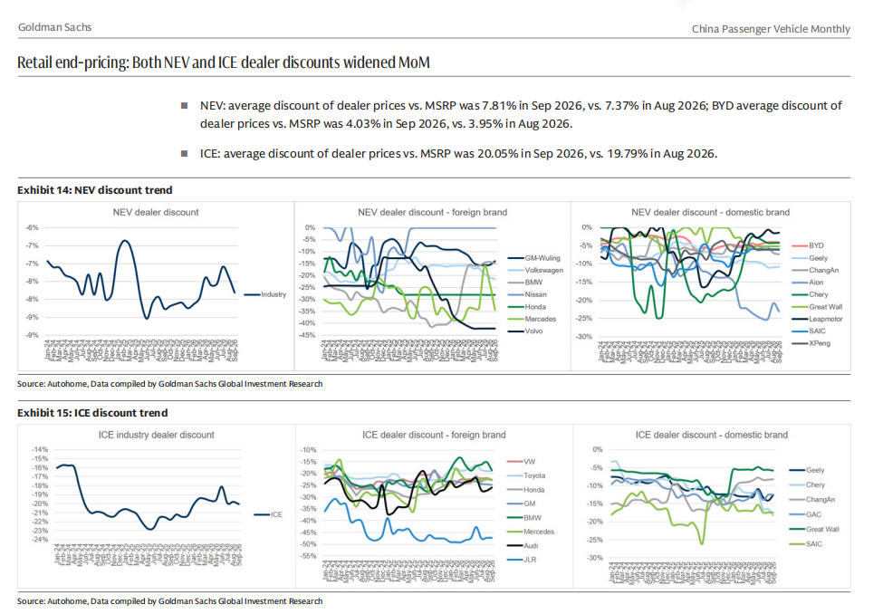
背景与关键数据
- 零售销量 vs 批发销量：零售是经销商卖给消费者的数量，最能反映真实需求；批发是车企卖给经销商的数量，可能堆在库存里。高盛这里说的是零售。
- 渗透率的"分母效应"：渗透率 = 新能源销量 ÷ 总销量。如果分子跌 16%，分母（总销量）跌得更多，渗透率反而上升。高盛特意点出 9 月属于这种情况，就是提醒大家别把"渗透率创新高"当成好消息。粗略倒算：渗透率从 65% 升到 67%、新能源 -16%，意味着燃油车销量大约同比下降两成以上，整体车市约 -18%。
- 以旧换新补贴：2024 年起国家对报废旧车换新车给予 1.5–2 万元补贴，到 2026 年 8 月累计带动 535.3 万辆。"跨期消费替代"的意思是：补贴并没有创造新需求，而是把明年、后年本来要买车的人提前拉到今年来买。等这批人买完了，后面就出现"需求真空"。
- 折扣率：经销商实际成交价相对厂商指导价（MSRP）的让利幅度。新能源 7.81%、燃油车 20.05%，意思是一辆指导价 20 万的燃油车，终端平均要让 4 万才卖得出去。折扣率环比继续扩大，直接压缩车企和经销商的毛利。
图片解读
- 这是高盛《中国乘用车月报》里的一页，标题"零售终端定价：新能源和燃油车的经销商折扣环比都在扩大"。
- 文字要点：新能源行业平均折扣 7.81%（8 月 7.37%）；比亚迪折扣 4.03%（8 月 3.95%），明显低于行业，说明比亚迪的议价能力仍然最强；燃油车平均折扣 20.05%（8 月 19.79%）。
- 图 14 新能源折扣趋势（三个小图）：左图是行业平均线，纵轴从 -6% 到 -9%，近两年在 -7% 到 -9% 之间震荡，最新读数在 -7.8% 附近。中图是外资品牌：奔驰、沃尔沃等豪华品牌折扣已深到 -35% 到 -45%，宝马、日产也在 -25% 以下，说明外资新能源车在中国基本是"打骨折"清库存。右图是自主品牌：大部分在 -5% 到 -15% 区间，零跑等新势力折扣相对更深（约 -25%），比亚迪、吉利、奇瑞相对克制。
- 图 15 燃油车折扣趋势：行业平均从 2023 年的 -15% 一路深到 -22%，最近在 -20% 附近。外资品牌捷豹路虎折扣最深（接近 -50%），大众、丰田、本田在 -15% 到 -25%；自主品牌燃油车折扣在 -5% 到 -25%，长城波动最大。
- 传达的信号：价格战不是某个品牌的问题，而是全行业、尤其是外资品牌在中国的"系统性出清"。
为什么重要 / 对市场和经济的含义
- 汽车是中国最大的单一消费品类（社零里占比约一成），也是制造业投资和就业的重要支柱。车市在旺季同比 -16% 到 -18%，是内需疲弱最直观的证据，和昨天报告里"居民新增贷款为零"的信贷数据相互印证。
- 对车企：折扣扩大 + 销量下滑 = 利润双杀。2026 年三季报汽车板块（尤其是二线新能源和合资车企）大概率难看。比亚迪凭借低折扣和成本优势会进一步拉开差距，这是"存量争夺阶段"的典型特征——强者恒强、弱者出清。
- 对政策：补贴效果递减已经被高盛明确点出，意味着如果政府想继续托车市，要么加码补贴（财政压力），要么接受销量回落。这也是为什么市场一直在盼"真金白银"的消费刺激（见帖 16）。
- 和欧盟那条线（帖 9）合起来看：国内卖不动的车（尤其是新能源和混动）会更多地涌向出口，而欧盟正在评估对混动车设置年 35 万辆的进口上限。内卷外溢，外部的反制就来了。
延伸知识
- 政策透支效应的历史案例：2009–2010 年中国"汽车下乡 + 购置税减半"让车市暴增 46% 和 32%，补贴退出后 2011 年增速骤降到 2.5%。美国 2009 年"旧车换现金"（Cash for Clunkers）计划也是：两个月内销量猛增，随后几个月销量塌方，经济学家事后估算大部分销量只是从未来"借"来的。
- 渗透率 S 曲线：新技术的渗透率通常呈 S 形——早期慢、中期快、到 60–70% 以后进入平台期。中国新能源渗透率已到 67%，意味着"靠替代燃油车获得增长"的红利期基本结束，接下来的增长只能靠整体车市扩容或出口，这是理解新能源车企估值的关键。
帖 3 · 14:20 · 瑞银：美国企业利润/GDP 达 14.5%，创战后 75 年新高
美国企业从每一块钱 GDP 里分走的利润，已经比二战后任何时候都多；而且 2026 年二季度的利润扩张第一次不再只靠科技和金融，石油和一批"老行业"也在贡献——好消息，但和"经济增长不均衡"的现实对不上。读全文收起
帖子原文
瑞银： 研究历史上，美国企业税前利润/GDP 的变化。1947 年—1960 年代末受益于战后重建等，该比值在约 11%。1970—2000 年企业利润份额处于较低水平，只有 8.5%，即使在互联网泡沫繁荣期间，该比例也始终没有突破 10%；2000-2020 年，减税、全球供应链整合、融资成本下降、劳动份额降低，该比值回升至约 11%—12%；2020 年以来，企业利润率进一步抬升，平均达到 12.7%；今年二季度，更是达到了 14.5%，创下战后 75 年来的新高。 从行业看，绝大部分增长来自计算机、电子和信息行业以及金融业。这一情况与标普 500 指数的盈利表现大体相似。不过，2026 年第二季度的情况发生了值得注意的变化。美国整体企业利润占 GDP 的比例进一步提高约 1 个百分点，其中只有约 20% 的增长可以归因于科技和金融业。石油行业贡献了约 0.4 个百分点，其余增长来自多个其他行业。而这些行业的利润份额在此前几年总体上一直呈现疲弱趋势。企业盈利增长向更多行业扩散，是一个令人鼓舞的信号，同时也令人略感困惑，因为美国经济增长仍然表现得并不均衡。 #其他国家经济#
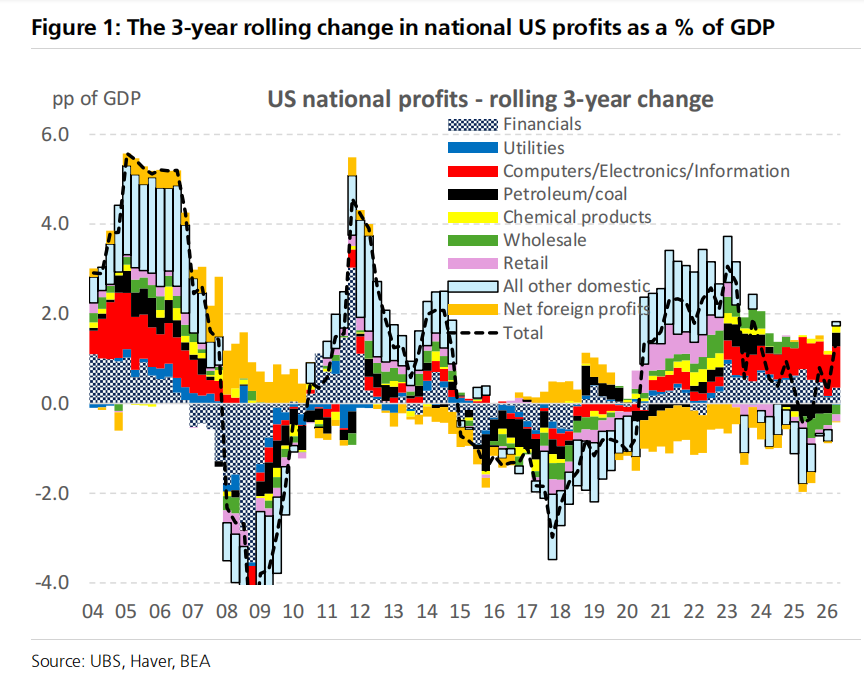
背景与关键数据
- 企业利润/GDP 是什么：GDP 是一个国家一年创造的总收入，这笔收入在劳动者（工资）、企业（利润）、政府（税收）之间分配。利润/GDP 从 8.5% 升到 14.5%，意思是蛋糕里企业拿走的那一块从不到十分之一变成了接近七分之一。镜像就是劳动份额下降。
- 瑞银分的四个时代：战后重建期（约 11%）、1970–2000 年的"低利润份额时代"（8.5%，连互联网泡沫都没突破 10%）、2000–2020 年回升到 11–12%（减税、全球化、低利率、工会弱化）、2020 年以后 12.7%，2026 年二季度 14.5%。
- 这个数据用的是 BEA（美国经济分析局）的国民账户口径，覆盖所有美国企业（包括非上市），不是标普 500 的财报，所以更能代表整个经济。
- 二季度的新变化：利润/GDP 环比再升约 1 个百分点，科技 + 金融只贡献了其中约 20%，石油贡献 0.4 个百分点（伊朗战争推高油价的直接结果，布伦特长期在 100 美元以上），其余来自此前一直疲弱的行业。
图片解读
- 图是瑞银的 Figure 1，"美国企业利润/GDP 的 3 年滚动变化"，横轴 2004–2026 年，纵轴单位是"GDP 的百分点"，正值表示这三年利润份额扩大。
- 堆叠柱按行业拆分：金融（网格）、公用事业（蓝）、计算机/电子/信息（红）、石油/煤炭（黑）、化工（黄）、批发（绿）、零售（粉）、其他国内行业（浅蓝）、海外净利润（橙），黑色虚线是合计。
- 三个高峰：2005–2006（约 +5.5 个百分点，金融 + 石油 + 科技共同推动，随后 2008–2009 跌到 -4）；2011–2012（约 +5，金融危机后的 V 形反弹）；2021–2023（约 +3.5，疫情后财政刺激 + 科技）。
- 最值得看的是右端：2024–2025 年合计一度回落到零附近甚至微负（橙色海外利润是负贡献，说明强美元和海外经济弱拖累了美企海外盈利），而 2026 年最新一根柱子猛地回到约 +1.9，其中红色（科技）、黑色（石油）和浅蓝色（其他国内行业）都是正贡献，橙色（海外）仍是负的。
- 信号：这一轮利润扩张是"内生 + 广泛"的，不是靠海外，也不只靠 AI。
为什么重要 / 对市场和经济的含义
- 对美股估值：市盈率 = 价格 ÷ 盈利，而盈利处在历史最高的利润率上。如果利润率均值回归（哪怕只是回到 12%），标普 500 的 EPS 会被砍掉 15% 以上，股价还没有为此定价。这是看空美股的人最核心的论据之一（GMO 的 Grantham 说过"利润率是金融领域最均值回归的序列"）。
- 为什么利润能这么高：用 Kalecki–Levy 利润恒等式理解最清楚——企业利润 ≈ 企业投资 + 政府赤字 + 净出口 − 家庭储蓄 + 股息。美国现在是：AI 资本开支狂飙（投资↑）、财政赤字 6–7% GDP（赤字↑）、家庭储蓄率只有 4% 左右（储蓄↓）。三项同时推高利润，所以它不是"企业突然变聪明了"，而是宏观收支结构的结果。只要赤字和资本开支不收缩，利润份额就很难大幅回落。
- "令人困惑"的地方：GDP 增长不均衡（消费靠高收入群体、中低收入家庭被油价和利率挤压，见帖 13 穆迪的测算），但利润在多行业扩散。一种解释是企业通过涨价把成本转嫁给了消费者（9 月 CPI 3.7% 超预期），即"利润驱动型通胀"；另一种是油价带动能源链条上的利润。无论哪种，都意味着通胀粘性比想象中强，美联储更难降息。
延伸知识
- 劳动份额与利润份额的此消彼长：1970–2000 年利润份额低，对应的是工会力量强、工资增长快；2000 年后中国加入 WTO、供应链全球化、工会衰落，利润份额上升。这也是为什么"再工业化、关税保护"的政治诉求会和"利润率回落"的市场风险绑在一起。
- Kalecki 利润方程的直觉：企业的利润来自别人的支出。政府多花一块钱（赤字），这块钱最终变成某家企业的收入；家庭少存一块钱，也是企业的收入。所以"财政赤字是企业利润的朋友"，这解释了为什么 2020 年以来天量赤字和创纪录利润同时出现。
帖 4 · 14:40 · 高盛：婴幼儿奶粉线下销售额 -10%，在萎缩的市场里抢份额
奶粉卖不动，不是因为品牌不行，而是因为婴儿越来越少——这是人口数据传导到消费品的最直接链条。读全文收起
帖子原文
高盛： 中国奶粉企业已经不是简单地争夺增长市场，而是在不断萎缩的市场里争夺消费者。2026 年 7—8 月，中国婴幼儿配方奶粉线下市场销售额同比下降约 10%，其中，销量同比下降 10.5%，而平均售价同比增长 1%。大型本土奶粉企业占据线下市场约 62.8% 的销售额份额。主要跨国品牌的合计份额从 5—6 月的 22.3% 提高至 23.2%。 2026 年第三季度，中国婴幼儿奶粉线上销售额同比下降 12%。相比之下，第二季度同比下降 5%。第三季度的整体表现明显弱于第二季度。从月度变化看，9 月份的线上销售额同比下降 5%，相比 8 月份下降 12%，跌幅有所收窄。 #人口#
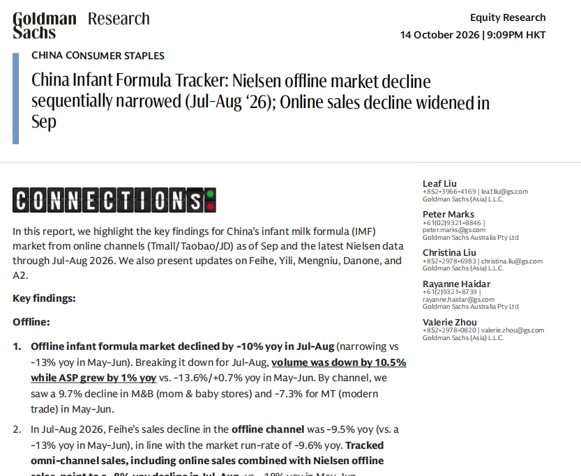
背景与关键数据
- 量价拆分：销售额 -10% = 销量 -10.5% + 均价 +1%。均价微涨说明没有打价格战（甚至还在高端化），跌的全是"量"，也就是喝奶粉的婴儿数量。标签打 #人口# 就是这个意思。
- 出生人口背景：中国出生人口从 2016 年的 1786 万一路降到 2023 年的 902 万，2024 年因龙年小幅回升到 954 万，之后又继续走低。婴幼儿奶粉的消费窗口是 0–3 岁，所以当前市场规模对应的是 2023–2026 年的出生人口，而这几年正好是历史最低区间。
- 格局：本土大厂（飞鹤、伊利、君乐宝等）线下份额 62.8%；跨国品牌（达能、雅培、a2 等）合计份额从 22.3% 小幅回升到 23.2%。在存量市场里，份额的小幅变化就是零和博弈。
- 线上 Q3 -12%（Q2 -5%），但 9 月单月 -5%（8 月 -12%），说明三季度的低点可能在 8 月。
图片解读
- 高盛《中国婴幼儿奶粉追踪》报告首页（2026 年 10 月 14 日）。标题：尼尔森线下市场跌幅环比收窄（7–8 月），线上销售跌幅 9 月扩大。
- 文字要点：线下 7–8 月 -10%（5–6 月 -13%）；销量 -10.5%、均价 +1%（5–6 月是 -13.6% / +0.7%）；分渠道，母婴店（M&B）-9.7%，现代渠道（商超，MT）-7.3%；飞鹤线下 -9.5%（5–6 月 -13%），与行业持平；飞鹤全渠道（线上 + 线下）约 -8%（5–6 月 -18%）。
- 信号：跌幅在收窄，但"收窄"是从 -13% 到 -10%，仍然是两位数下滑，谈不上企稳。
为什么重要 / 对市场和经济的含义
- 奶粉是"人口数据的消费品镜像"。出生人口的变化，奶粉大约 0–1 年后就能看到，比教育、住房等晚周期行业要早得多，所以分析师用它来验证人口趋势是否在改善。目前的答案是：2025 年推出的育儿补贴（3 岁以下每年 3600 元）还没有扭转生育趋势。
- 对相关公司（飞鹤、伊利、蒙牛、a2 等）：在萎缩市场里的策略只能是"抢份额 + 高端化 + 延伸到成人营养品/出海"。这也是为什么飞鹤这类公司估值长期被压在低位——市场很难给"缩量行业"的龙头高倍数。
- 放在今天的整体语境里：帖 15 养老/看护岗位招聘 +43.9% 是同一枚硬币的另一面——摇篮在收缩，养老院在扩张。
延伸知识
- 人口红利 → 人口负债：抚养比（非劳动年龄人口 ÷ 劳动年龄人口）上升，意味着每个劳动者要养更多老人和孩子。中国 2010 年左右抚养比触底，之后持续上升；日本在 1990 年代初经历类似拐点，随后是"失去的三十年"。消费结构从婴儿用品转向养老、医疗，这是一条可以跟踪几十年的主线。
- 为什么补贴生育很难见效：经济学上生育决策是对"未来 20 年成本"的判断，一次性或小额补贴改变不了房价、教育、职场对女性的成本结构。韩国 2006 年以来花了超过 300 万亿韩元鼓励生育，总和生育率仍一度跌到 0.72，就是典型案例。
帖 5 · 14:59 · 汇丰：长鑫 DRAM 技术追赶是长期威胁，但 2–3 年内改变不了格局
长鑫宣布要在 2026 年底做出下一代 4F² 结构的 DRAM、比韩国厂商早 2–3 年，存储股因此跌了两天；汇丰的判断是"威胁是真的，但没那么快"，回调反而是买点。读全文收起
帖子原文
汇丰： 中国长鑫存储（CXMT）是否正在凭借下一代 DRAM 技术，打破三星、SK 海力士和美光长期主导的全球存储芯片市场？我们认为，中国的技术追赶确实构成长期威胁，但未来 2—3 年还不足以实质性改变全球 DRAM 的供需格局。市场近期因为中国技术突破消息而出现的存储芯片股价回调，创造了更有吸引力的投资机会。 #经济数据#
（附件：Global Memory_ China DRAM becoming a real threat_.pdf）
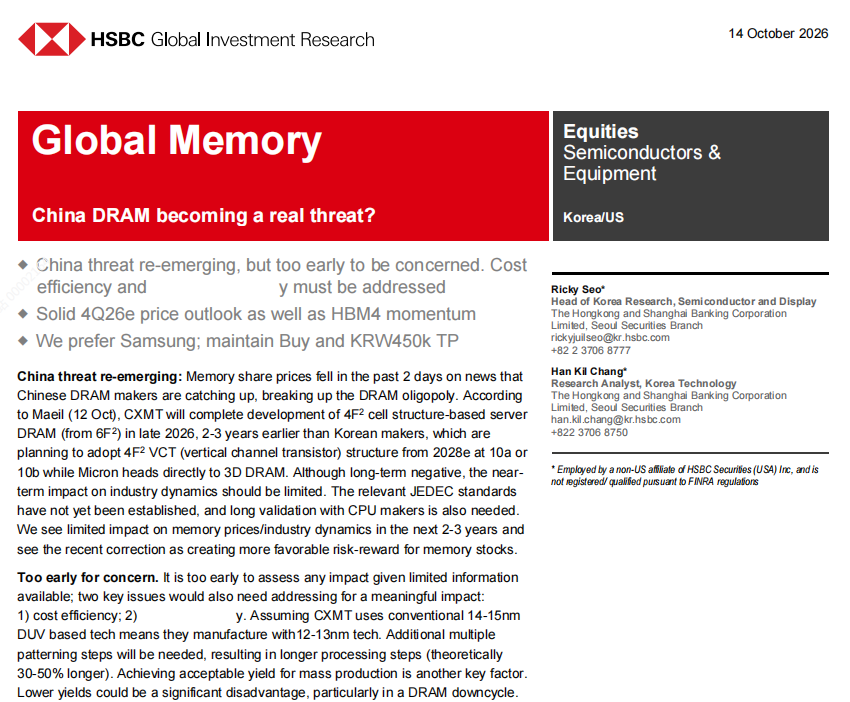
背景与关键数据
- DRAM 寡头格局：全球 DRAM 市场长期由三星（约四成）、SK 海力士（约三成多）、美光（约两成多）三家瓜分，长鑫是唯一有规模的中国玩家，份额个位数。
- 4F² 是什么：F 是制程的"最小特征尺寸"，F² 就是一个最小方格的面积。DRAM 一个存储单元（cell）占多少个 F²，决定了同一片晶圆能塞多少位数据。现在主流是 6F²，4F² 意味着同样工艺下单元面积缩小三分之一，相当于"不换光刻机也能多装 50% 的数据"。实现 4F² 要用垂直沟道晶体管（VCT），这是一次结构性的架构跳跃。
- 汇丰报告里的时间表（引自韩媒 Maeil）：长鑫 2026 年底完成 4F² VCT 服务器 DRAM 开发；三星/海力士计划 2028 年在 10a/10b 节点才采用 4F²；美光则跳过 4F²，直接走 3D DRAM 路线。
- 为什么汇丰不担心：（1）JEDEC（存储器行业标准组织）还没为这类产品制定标准，CPU 厂商（英特尔、AMD）的验证周期很长；（2）成本效率存疑——长鑫因为买不到 EUV 光刻机，只能用 DUV 在 14–15nm 工艺上做，要用多重曝光把等效制程推到 12–13nm，工艺步骤理论上多 30–50%，良率是大问题，在 DRAM 下行周期里低良率是致命伤。
- 汇丰的结论：偏好三星，维持买入，目标价 45 万韩元。
图片解读
- 汇丰《全球存储：中国 DRAM 正在成为真正的威胁？》报告首页（2026 年 10 月 14 日），覆盖韩国/美国半导体。
- 三个要点：中国威胁重现但为时尚早、成本效率和（被遮挡的词，应为"性能/可靠性"）必须解决；2026 年四季度价格展望稳健，HBM4 有动能；偏好三星。
- 正文两段讲的就是上面"时间表"和"为什么不担心"的逻辑。
为什么重要 / 对市场和经济的含义
- 存储芯片是当前 AI 行情里最"周期性"的一环：价格涨跌直接决定三星、海力士、美光的利润。这两天的回调说明市场对"中国追赶"极其敏感——因为 2010 年代中国在 LCD 面板、光伏上的追赶就是从"技术落后但产能狂扩"开始，最后把日韩台厂商的利润打没了。
- 汇丰的逻辑有两层：短期（2–3 年）供需不变、HBM 需求强、四季度合约价坚挺，所以回调是机会；长期要盯长鑫的良率和 JEDEC 标准进展。
- 和帖 14（手机因内存涨价暴跌 22%）合起来看：内存涨价正在压垮下游，这本身就是存储厂商"涨价周期"可持续性的隐忧。如果需求侧崩了，中国产能再出来，就是双杀。
延伸知识
- 存储周期的规律：DRAM 是标准品，价格由供需决定，历史上每 3–4 年一个周期。涨价期厂商赚暴利 → 疯狂扩产 → 供过于求价格腰斩 → 削减资本开支 → 再涨价。2017–2018 和 2021 年是上行，2019 和 2023 年是下行。现在的上行周期由 AI 服务器（HBM）驱动，特殊之处是 HBM 占用了大量产能，挤压了普通 DRAM 供给。
- 中国半导体追赶的历史模板：面板（京东方 2010 年代）、光伏（2010 年后）、动力电池（宁德时代）都走了"政府补贴 + 规模优先 + 价格战"的路径。存储的难点是对先进光刻设备的依赖更强，美国出口管制卡住了 EUV，所以"能不能用 DUV 多重曝光做到经济性"是关键变量。
帖 6 · 15:30 · 野村：社融 7.1%、贷款 4.8% 双双历史最低，但年内不会再降息
信贷增速创历史新低，但野村认为央行不会再降息——因为钱已经很便宜了，问题不在"价格"，而在没人想借。读全文收起
帖子原文
野村： 9 月份，中国社融存量同比增速继续下降至 7.1%，刷新历史最低纪录。在各项社融构成中，人民币贷款继续成为主要拖累，人民币贷款余额同比增速进一步下降至 4.8%，同样创下历史新低。政府债券融资则重新加速，企业债券融资转为负增长。尽管如此，我们估计 2026 年剩余时间，中国人民银行不会进一步降低主要政策利率或存款准备金率。因为 9 月银行间 DR007 平均利率甚至低于 7 天逆回购政策利率。这表明银行间资金价格相对宽松。换句话说，不完全是价格的问题。 #金融#
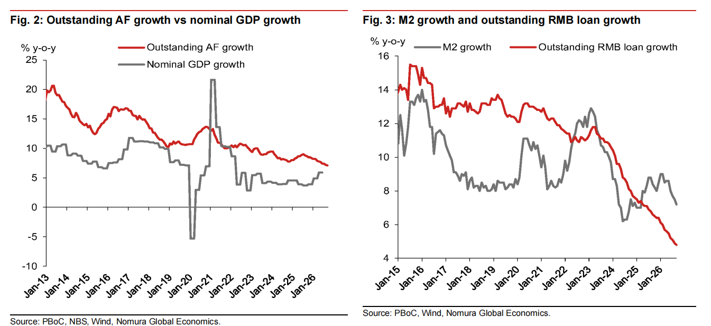
背景与关键数据
- 社融（社会融资规模）：实体经济从金融体系获得的全部资金，包括银行贷款、企业债、政府债、股票融资、信托等。存量增速 7.1% 是有数据以来最低（2016 年前后曾在 13% 以上）。
- 人民币贷款余额增速 4.8%：这是社融里最大的一块，也是最能反映"企业和居民想不想借钱"的指标。昨天 JPM 那帖已经讲过：9 月居民新增贷款为零，企业中长期贷款也低于去年。
- 结构：政府债券融资在加速（财政在发力）、企业债融资转负（企业在净偿还）。也就是说，整个信用扩张都靠政府，私人部门在收缩。
- DR007 vs 7 天逆回购利率：DR007 是银行之间用国债做抵押借 7 天钱的实际利率（市场价），7 天逆回购利率是央行借钱给银行的官方利率（政策价）。正常情况下 DR007 应该略高于政策利率；9 月 DR007 平均比政策利率还低，说明银行手里的钱多到用不完，根本不缺流动性。
- 野村的推论：既然市场利率已经低于政策利率，再降政策利率也没意义（"推绳子"）；所以年内不会降息降准。
图片解读
- 野村的两张图。图 2（左）：社融存量增速（红线）与名义 GDP 增速（灰线），2013–2026。红线从 2013 年的 20% 一路降到 7%；灰线在 2020 年一季度因疫情跌到 -5%、2021 年因基数效应冲到 21%，之后一直在 4–6% 低位徘徊，最近微升到约 6%。两条线的差距（社融增速 − 名义 GDP 增速）就是"宏观杠杆率的变化"，差距缩小意味着加杠杆放缓。
- 图 3（右）：M2 增速（灰）与人民币贷款余额增速（红），2015–2026。红线从 2016 年的 15% 一路单边下行到 4.8%，几乎没有反弹；灰线 M2 波动较大，2023 年初冲到 13%、2024 年中跌到 6.2%、2025 年回到 9%，现在 7.2%。
- 最关键的信号在图 3 右端：贷款增速已经跌到 M2 增速下方。正常情况下银行放贷创造存款，贷款增速应高于或接近 M2；现在倒挂，意味着 M2 的增长不是靠贷款，而是靠政府发债花钱、财政存款转为企业存款，以及居民把理财赎回存成定期。这是"财政驱动、信贷萎缩"的典型画面。
为什么重要 / 对市场和经济的含义
- "不完全是价格的问题"是野村这帖的点睛之笔。利率再低，没有赚钱机会的企业不会借钱扩产，对房价没信心的居民不会贷款买房。这就是凯恩斯说的"流动性陷阱"，日本 1990 年代经历过。
- 对资产的含义：（1）债券——如果央行不降息，国债收益率下行空间有限，但信贷需求弱意味着银行会继续买债，所以收益率也很难大幅上行，大概率低位横盘；（2）银行股——贷款增速 4.8% + 息差压缩 = 营收增长几乎为零，只能靠拨备释放撑利润；（3）人民币——国内利率不再下调，中美利差不再扩大，对汇率是支撑（见帖 10）。
- 政策含义：货币政策已经"尽力"，接下来只能靠财政（直接给居民发钱、补贴消费）。这和帖 16 付鹏"掏出真金白银让利居民"是同一个结论。
延伸知识
- 推绳子（pushing on a string）：货币政策可以收紧（拉绳子有效），但很难在没人想借钱时刺激经济（推绳子无效）。这个比喻出自 1930 年代美国国会听证。日本在 1999 年把利率降到零、2001 年开始 QE，但银行贷款连续十几年负增长，就是教科书案例。
- 资产负债表衰退（辜朝明）：当资产价格（房价、股价）暴跌后，企业和居民即使有正现金流，也会优先还债而不是投资消费，因为他们的目标从"利润最大化"变成了"负债最小化"。此时唯一有效的是政府成为"最后的借款人"替私人部门花钱——这正是现在中国社融结构（政府债加速、私人收缩）所显示的。
帖 7 · 15:38 · 摩根士丹利：A 股情绪指标 8%，低情绪不等于买点
大摩的 A 股情绪温度计读数只有 8%（满分 100%），但大摩明确说"冷不等于该买"，因为压制市场的三座大山（内需、美债收益率、资金流）一座都没搬走。读全文收起
帖子原文
摩根斯坦利： MSASI 是我们自行构建的 A 股投资者情绪指标，它综合成交额、融资余额、新开户数量、技术指标、衍生品市场与盈利预期等 12 个指标。数值越高，代表市场情绪及交易活跃度越强。截至 10 月 14 日，加权 MSASI 较 9 月 30 日提高 2 个百分点，达到 8%，仍然处于相对较低水平。 与此同时，加权 MSASI 的一个月移动平均值下降 3 个百分点，至 20%。低情绪是否意味着买入机会？不一定。在交易层面，低情绪可能意味着市场悲观预期已经较多，也可能意味着部分潜在卖压已经释放。但如果企业盈利继续恶化、资本流出延续，低情绪可以持续很长时间。 我们认为，A 股目前受到三重因素制约：第一，国内需求持续疲弱。居民消费、房地产和私人部门信贷需求不足，意味着企业盈利难以实现广泛复苏。第二，美国国债收益率维持高位。美国 9 月 CPI 高于预期之后，市场重新定价更加鹰派的美联储政策路径。这使全球金融环境趋紧，削弱股票估值的支撑。第三，资金流向不再像此前那样有利。境外资金重新净流出，境内散户参与度低迷，香港市场还面临较大的新股及股票融资供给压力。 我们因此维持 9 月初下调中国股票指数目标后的谨慎观点。不过，并不认为市场必然重演 2022—2023 年那种广泛的风险资产抛售。原因包括美联储本轮利率周期可能较浅、香港融资环境比当时更加健康，以及中国 AI 产业和亚洲资本开支周期仍有结构性支撑。 #A股#
（附件：A-Share Sentiment Remains Subdued Amid Global Liquidity Headwinds_ China Equity Strategy _ Asia Pacific.pdf）
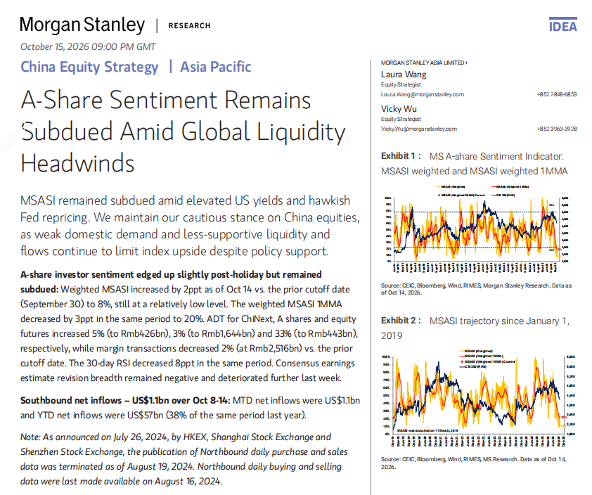
背景与关键数据
- MSASI（Morgan Stanley A-share Sentiment Indicator）：大摩自建的综合指标，把成交额、融资余额、新开户数、技术指标、衍生品持仓、盈利预期修正等 12 个指标标准化后加权，输出 0–100% 的百分位数。8% 的意思是：当前情绪比历史上 92% 的时间都低。一个月移动平均 20%，从上月的 23% 继续下降。
- 报告里的交易数据：创业板日均成交 4260 亿（+5%）、A 股整体 1.64 万亿（+3%）、股指期货 4430 亿（+33%）、融资交易 2.52 万亿（-2%）、30 日 RSI 下降 8 个点、一致盈利预测修正广度继续为负且上周进一步恶化。成交和期货在涨但融资在降，说明是对冲盘在动、不是多头在加仓。
- 南向资金：10 月 8–14 日净流入 11 亿美元，年初至今 570 亿美元，只有去年同期的 38%。内地资金买港股的热情明显降温。
- 报告还注明：北向资金的每日买卖数据自 2024 年 8 月 19 日起已停止公布，所以现在看不到外资每日动向，只能用其他数据推断。
图片解读
- 大摩《中国股票策略》报告首页（2026 年 10 月 15 日）。
- 右上 Exhibit 1：MSASI 加权值（黄色面积，波动剧烈）、一个月均值（红线）和沪深 300 指数（深蓝线）的叠加。可以看到黄色面积现在处于底部区域，和沪深 300 近期的回落同步。
- 右下 Exhibit 2：2019 年以来 MSASI 的完整轨迹。历史上情绪冲到 80–100% 的时点（2020 年 7 月、2021 年初、2024 年 10 月、2025 年秋）都对应阶段性顶部；跌到 10% 以下的时点（2022 年 10 月、2024 年 1–2 月）之后确实有反弹，但有的反弹要等几个月才来。这就是大摩说"低情绪可以持续很长时间"的依据。
为什么重要 / 对市场和经济的含义
- 大摩的三重约束是一个完整的框架：盈利（内需弱 → EPS 起不来）、估值（美债收益率高 → 全球股票的贴现率高）、资金（外资流出 + 散户不玩 + 港股 IPO 抽血）。三者缺一个都可以反弹，三者同时存在就只能磨底。
- 但大摩也划了下限："不会重演 2022–2023 年的广泛抛售"，理由是美联储这轮周期较浅、港股融资环境比当时健康、中国 AI 和亚洲资本开支有结构性支撑。翻译一下：不看多，但也不认为会崩，是"区间震荡偏弱"。
- 和帖 1 对照：监管要求券商推送"沪市 ETF 三日净流入 700 亿"的文章，而大摩的数据显示散户参与度低迷、融资余额下降——两边说的是同一件事，只是立场不同。
延伸知识
- 情绪指标怎么用：极端读数（>90% 或 <10%）是反向指标，但只在"催化剂出现"时才有效。2024 年 9 月 24 日政策组合拳之前 MSASI 也在低位躺了大半年，是政策催化让它一周内从 10% 冲到 90%。所以低情绪是"必要条件"而非"充分条件"。
- 贴现率与新兴市场估值：美债 10 年收益率是全球资产的"无风险利率"，它上升时，所有未来现金流的现值都下降，而新兴市场（风险溢价更高、盈利更不确定）受伤最重。这就是为什么美国 CPI 超预期会直接传导到 A 股和港股。
帖 8 · 16:09 · 瑞银：出口繁荣的悖论——越能生产，内需越弱
中国的出口机器越转越快，但出口赚来的钱没有变成国内的投资和消费——"生产循环"和"需求循环"脱钩了，而全世界不可能都靠出口过日子。读全文收起
帖子原文
瑞银： 出口繁荣的悖论：为什么中国越能生产，国内需求却越显疲弱？ 为什么出口增长 25%，制造业投资却下降 6.1%？正常情况下，订单增加应该刺激企业扩大生产能力。为什么两者发生背离？为什么中国台湾的 AI 出口繁荣能够伴随资本开支、财政收入和消费改善，而中国出口增长却无法抵消房地产和投资萎缩？差别究竟来自产业性质、收入分配，还是资产负债表？如果中国通过扩大出口解决国内需求不足，而其他国家也希望增加出口，那么谁来承担最终消费？这种增长模式在全球经济体系中能够维持多久？ 中国当前面临的，不仅是总需求不足，更是生产能力形成机制与最终需求形成机制之间的脱节。过去，扩大产能、创造就业、增加居民收入、促进房地产与消费，可以形成相互强化的循环。现在，部分产业仍然能够通过出口扩大生产，但房地产、地方财政和家庭资产负债表这些原本支撑国内需求的环节却在收缩。结果可能是：生产端的国际竞争力继续提高，但它对国内投资和居民消费的边际拉动效果减弱。 #经济数据#
（附件：Mainland China_ trade is booming, but .....pdf）
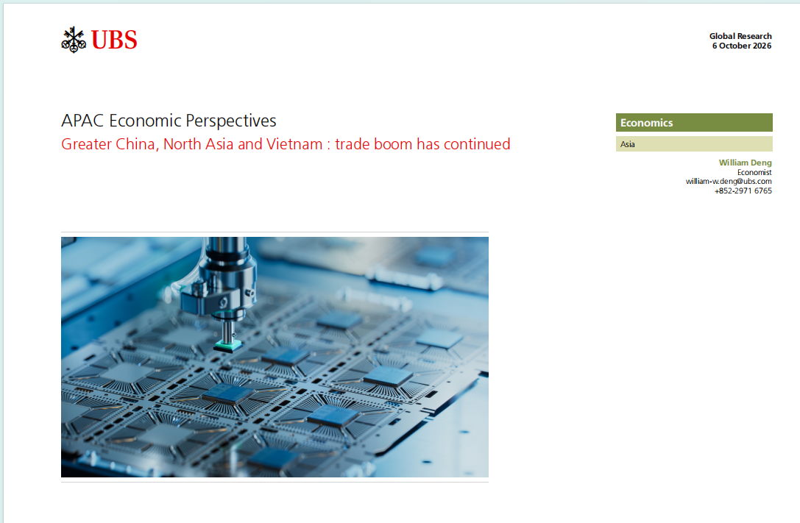
背景与关键数据
- 帖子引用的核心对比：出口增长 25% vs 制造业投资 -6.1%。正常逻辑是订单多 → 产能不够 → 扩产投资；现在是订单多但不扩产，说明企业判断这波出口是"抢出口 + 价格战"，不是可持续需求，或者利润太薄根本没钱扩产。
- 台湾的对照：台湾的出口繁荣靠台积电等 AI 芯片，毛利率 50% 以上，利润留在岛内 → 资本开支 + 税收 + 高薪 → 消费改善。中国的出口增量很大一部分是电动车、光伏、化工、机械这类"打价格战"的品类，毛利率个位数，利润留不下来，自然带不动工资和消费。
- 瑞银的诊断：过去的正循环是"扩产 → 就业 → 收入 → 买房 + 消费 → 再扩产"。现在房地产（财富效应消失）、地方财政（卖地收入腰斩）、家庭资产负债表（不愿加杠杆，见帖 6）三个环节同时收缩，于是出口端的扩张被"短路"了，无法传导到内需。
- 合成谬误：一个国家靠出口解决内需不足是可行的，但如果中国、德国、日本、韩国都想这么干，就需要有人（美国、欧洲）当"最终消费者"并承担逆差。而美国在加关税、欧盟在准备"关闭市场"（帖 9），这个模式的外部约束正在收紧。
图片解读
- 瑞银《亚太经济展望：大中华、北亚与越南——贸易繁荣仍在继续》报告首页（2026 年 10 月 6 日），经济学家 William Deng。
- 配图是芯片封装生产线的照片，呼应"出口繁荣的主力是电子/半导体产业链"。没有数据图表，报告正文在附件 PDF 里。
为什么重要 / 对市场和经济的含义
- 这帖是理解今天所有中国数据的"总纲"：车市（帖 2）、奶粉（帖 4）、社融（帖 6）、A 股情绪（帖 7）的疲弱，和出口的创纪录繁荣（昨天 Robin Brooks 的帖子、今天帖 9 里对欧出口 +36%），不是矛盾，而是同一个结构的两面。
- 对资产的含义：出口链（电子、机械、化工、汽车出口龙头）的营收会好看，但利润率受压；内需链（消费、地产、银行）持续承压。市场已经这样分化了一年多，瑞银的分析说明这种分化有结构性原因，短期不会逆转。
- 对政策的含义：这个诊断指向的解药不是"再刺激生产"（已经产能过剩），而是修复需求形成机制——提高居民收入在 GDP 中的占比、给地方财政补血、稳定房地产。换句话说，就是分配问题（帖 16 付鹏的结论）。
延伸知识
- 贸易顺差 = 国内储蓄 − 国内投资：这是国民账户的恒等式。中国顺差创纪录（年化可能超过 1.2 万亿美元），本质上是国内储蓄太多、消费太少。Michael Pettis 的说法：顺差国的"竞争力"往往来自压低居民收入份额，而逆差国则被迫承担失业或举债。这就是为什么贸易战的根源是各国国内的分配结构，不只是关税。
- "中国冲击 2.0"：2001–2010 年中国加入 WTO 后的出口浪潮被称为"中国冲击 1.0"，让美国制造业损失了约 200 万岗位，并催生了后来的民粹政治。现在的 2.0 版本以电动车、光伏、电池、机械为主，冲击的对象变成了欧洲和日韩，欧盟的"核选项"（帖 9）就是政治反应。
帖 9 · 16:33 · 彭博：欧盟酝酿"核选项"——极端情况下可对中国关闭单一市场
欧盟领导人要求委员会在年底前拿出一项新的贸易权力，允许在极端情况下彻底切断某个国家进入欧盟单一市场的通道；直接的导火索是 9 月对华贸易逆差创纪录的 348 亿美元和中国对欧出口同比激增 36%。读全文收起
帖子原文
bloomberg： 在极端情况，欧盟可以对....关闭市场。 #政策分析#
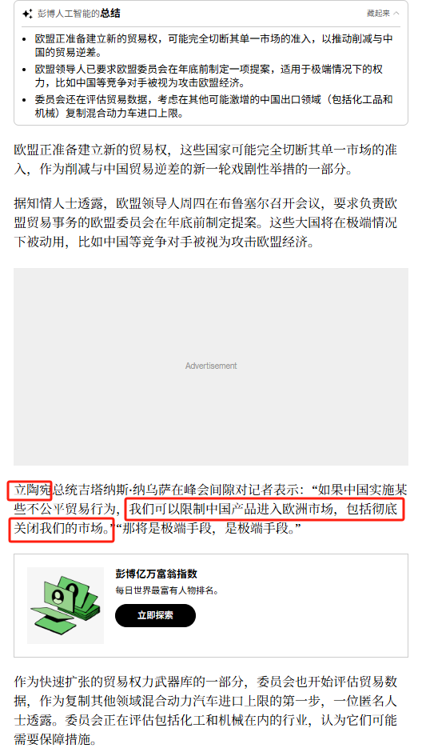
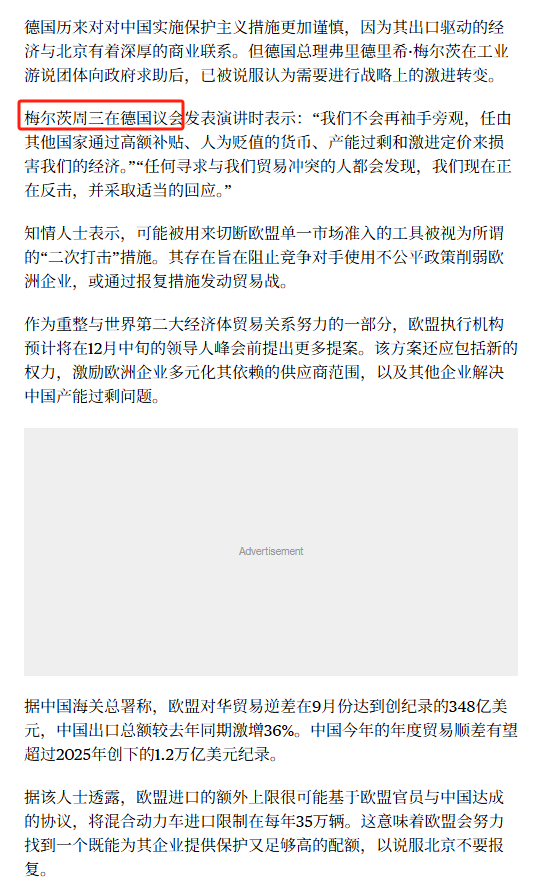
背景与关键数据
- 新工具的性质：被知情人士称为"二次打击"（second strike）措施，意思是不主动用，但要有威慑力——对手如果用不公平补贴、人为贬值、产能过剩、激进定价"攻击欧洲经济"，欧盟可以反击到"关闭市场"这个级别。
- 时间表：欧盟领导人周四在布鲁塞尔开会，要求委员会年底前提出提案；12 月中旬的领导人峰会会有更多方案，包括激励欧洲企业分散供应商、处理中国产能过剩的措施。
- 具体的第一步：委员会在评估贸易数据，考虑把混动车进口上限（可能是每年 35 万辆，基于此前欧中谈判的数字）复制到化工、机械等其他对华逆差激增的领域。
- 政治表态：立陶宛总统瑙塞达："如果中国实施不公平贸易行为，我们可以限制中国产品进入欧洲市场，包括彻底关闭我们的市场。那将是极端手段。"德国总理默茨周三在联邦议院："我们不会再袖手旁观，任由其他国家通过高额补贴、人为贬值的货币、产能过剩和激进定价来损害我们的经济。"德国历来是对华最谨慎的（出口导向、大众宝马在华利益巨大），默茨转向说明德国工业界已经在向政府求助。
- 数据：据中国海关，9 月欧盟对华逆差创纪录的 348 亿美元，中国对欧出口 +36%；中国全年顺差有望超过 2025 年创下的 1.2 万亿美元纪录。
图片解读
- 图 1：彭博文章的 AI 摘要和正文前半部分。摘要三点：欧盟准备建立新贸易权，可完全切断单一市场准入，以削减对华逆差；领导人要求委员会年底前制定极端情况下的权力；委员会在评估对化工、机械等品类复制混动车进口上限。红框标出的是立陶宛总统的"彻底关闭市场"表态。
- 图 2：文章后半部分。红框标出默茨周三在议会的发言。随后讲了工具的"二次打击"性质、12 月峰会的更多提案、9 月逆差 348 亿美元的数据、混动车 35 万辆上限的来源。
为什么重要 / 对市场和经济的含义
- 这是帖 8"谁来承担最终消费"的现实回答：欧洲不想当。美国已经用关税把中国出口挤向欧洲（贸易转移），欧洲现在要筑墙。对中国出口链（尤其是汽车、化工、机械）这是中期最大的政策风险。
- 对欧洲自身：关闭市场是双刃剑——欧洲的通胀会更高（中国商品便宜）、绿色转型会更贵（光伏、电池靠中国）。所以"二次打击"大概率是谈判筹码，真正落地的会是配额、反补贴税这类中间手段。
- 对汇率：默茨点名"人为贬值的货币"，而人民币今年实际升值了 4%（帖 10）。欧洲的指控和事实有出入，但政治叙事一旦形成，汇率就会成为谈判议题——这可能是中国央行引导人民币升值的动机之一。
- 对市场：欧洲汽车股（大众、宝马、Stellantis）、化工股（巴斯夫）是这项政策的受益者预期；中国出口龙头（比亚迪、宁德时代的欧洲业务）是受损预期。
延伸知识
- 反胁迫工具（ACI）：欧盟 2023 年已通过的一项工具，允许对"经济胁迫"进行报复（关税、限制投资、限制政府采购等），当时主要针对中国对立陶宛的贸易限制（因台湾代表处事件）。现在讨论的新权力比 ACI 更进一步，是针对"不公平竞争"而非"胁迫"，门槛更低。
- 2024 年欧盟对华电动车反补贴税：欧盟对中国电动车加征 17–35.3% 的反补贴税，之后中欧一直在谈"最低价格承诺"替代方案。混动车进口上限（35 万辆/年）就是那轮谈判的产物。现在的思路是把这个模板推广到其他行业。
帖 10 · 16:36 · 彭博：人民币年内升值 4%，但这是央行在管理，不是市场在定价
人民币徘徊在四年来最强的位置附近，但彭博提醒：按市场逻辑（中美利差倒挂、通缩、资本外流），人民币今年本该贬值；它之所以升值，是央行通过中间价"管"出来的。读全文收起
帖子原文
bloomberg： 人民币今年已经对美元升值约 4%，但人民币依然是一种受到高度管理的货币。最明显的管理工具之一，就是人民币每日中间价机制。中国人民银行的立场显得过于防御性。不过如果市场真的具有至高无上的决定权，那么人民币今年本应该走弱，而不是出现升值行情。 #金融#
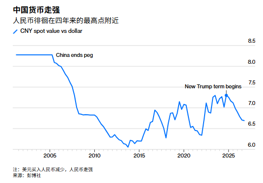
背景与关键数据
- 每日中间价机制：每个交易日早上 9:15，央行公布美元/人民币的"中间价"，在岸人民币当天只能在中间价上下 2% 的区间内交易。中间价的形成公式是"前一日收盘价 + 一篮子货币变化 + 逆周期因子"，最后一项就是央行的"手动调节旋钮"。央行想让人民币强，就把中间价定得比市场预期强，市场就得跟着走。
- 为什么市场逻辑说人民币该贬：（1）中美利差——中国 10 年国债收益率不到 2%，美国 4% 以上，持有美元资产利息高得多，资金应该流出中国；（2）国内通缩（CPI 0.9%）和信贷萎缩（帖 6），基本面弱；（3）大摩说外资在净流出（帖 7）。
- 为什么它反而升了：（1）贸易顺差创纪录，出口商手里积压了大量美元，一旦预期转向就会集中结汇；（2）央行通过中间价明确引导升值，可能有外交考量（美欧都在指责"人为贬值"）和控制输入型通胀的考量（油价 100 美元以上，人民币强一点进口更便宜）；（3）美元指数本身因美国财政和关税不确定性而承压。
- "过于防御性"：彭博的意思是央行把中间价工具用得太重，市场定价的空间被压缩，汇率变成了政策信号而非价格信号。
图片解读
- 彭博图表"中国货币走强：人民币徘徊在四年来的最高点附近"，画的是美元兑人民币即期汇率，2000–2026 年。注意纵轴是"1 美元换多少人民币"，所以曲线往下走 = 人民币升值。
- 关键节点：2005 年之前固定在 8.28（"China ends peg"标注的是 2005 年汇改结束盯住美元）；之后单边升值到 2014 年初的约 6.05；2015 年"8·11 汇改"后贬到 7 附近；2018 年贸易战、2022 年美联储加息两次逼近 7.3；"New Trump term begins"标注的 2025 年初在 7.3 左右；之后一路升值到现在的约 6.6。
- 注释写着"美元买入人民币减少，人民币走强"。信号：6.6 是 2022 年初以来最强，距离 2014 年的历史高点 6.05 还有约 9%。
为什么重要 / 对市场和经济的含义
- 对出口：升值 4% 直接削薄出口企业的利润，在价格战已经把毛利压到个位数的行业（帖 2 汽车），这是雪上加霜。但从政策角度，适度升值也是在给"产能过剩 + 人为贬值"的指控降温（帖 9）。
- 对资产：人民币走强通常利好港股和 A 股的外资情绪（汇兑收益），但这次是"管理出来的升值"，外资不一定买账——大摩的数据（南向资金只有去年的 38%、外资净流出）说明市场并没有因为升值而回流。
- 对央行：引导升值的代价是消耗政策空间——如果某天外部冲击（比如美联储再加息）导致贬值压力，央行就得反向动用储备。彭博说"过于防御"的潜台词是，这种单向管理长期会积累错配。
延伸知识
- 汇率的"不可能三角"：一国不可能同时拥有固定汇率、资本自由流动和独立的货币政策。中国选择的是"管理汇率 + 资本管制 + 独立货币政策"，中间价机制就是"管理汇率"的核心。这也是为什么人民币国际化推进缓慢——要让人民币成为储备货币，就得放开资本账户，就得放弃汇率管理。
- 逆周期因子：2017 年 5 月引入，央行承认在中间价公式里加入一个"根据宏观判断调节"的项，用于对冲市场的"羊群效应"。2020 年 10 月宣布"淡出"，但市场普遍认为它从未真正消失，只是时隐时现。
帖 11 · 16:41 · 彭博：玻利维亚央行停止买黄金，拆掉国家垄断换美元流动性
玻利维亚央行行长明确说"央行将不再购买黄金"，并取消黄金出口需央行许可的制度，目的只有一个：让更多美元流进国内银行体系——这是"美元荒"倒逼小国央行停买黄金换美元的真实案例。读全文收起
帖子原文
bloomberg： 又一家央行宣布停止黄金购买，争取更多美元流动性。 #金融#
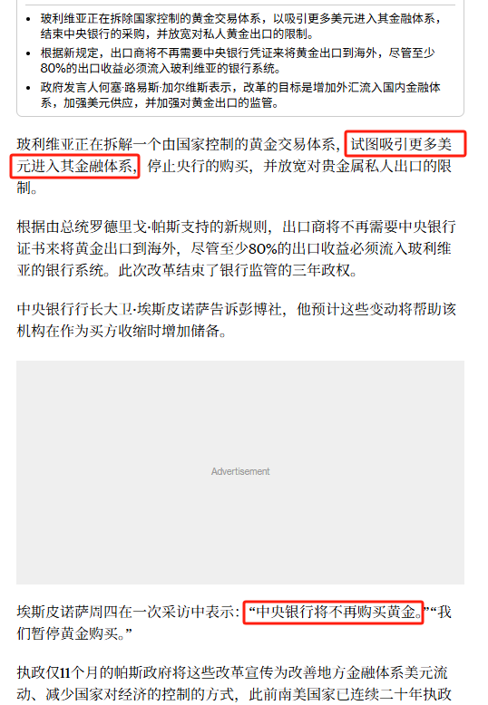
背景与关键数据
- 玻利维亚的困境：2023 年以来陷入严重美元短缺——天然气出口下滑、外汇储备几近枯竭、出现平行汇率（黑市美元比官方贵五成以上）、燃油进口都付不出钱。前政府 2023 年通过"黄金法"让央行收购国内产的黄金来充实储备，并要求金矿出口必须经央行认证。
- 新政府的转向：2025 年底上任的帕斯（Rodrigo Paz）政府执政 11 个月，走市场化路线。新规：出口商不再需要央行证书就能出口黄金；但出口收入至少 80% 必须流入玻利维亚的银行系统；结束三年的央行监管制度。央行行长埃斯皮诺萨说，改革会帮助央行"在作为买方收缩时增加储备"（即通过美元流入而非黄金收购来增加储备）。
- 逻辑链：国家买黄金 → 用本币付钱给矿商 → 美元没进来（金矿的美元收入被截在海外或黑市）。现在放开出口但强制 80% 结汇 → 美元进银行 → 缓解美元荒。央行自己则停止买金，因为它更需要美元而不是黄金。
- Jason 说"又一家"，指的是在美元流动性紧张（美联储鹰派、美债收益率高企）的环境下，不止一家新兴市场央行在停止增持甚至减持黄金换取美元。
图片解读
- 彭博文章的 AI 摘要和正文。摘要三点：玻利维亚拆除国家控制的黄金交易体系，吸引更多美元进入金融体系，结束央行购买，放宽私人出口；新规下出口商不再需要央行凭证，但至少 80% 的出口收益必须流入玻利维亚银行系统；政府发言人称目标是增加外汇流入、加强美元供应、加强出口监管。
- 红框标出的两处是核心："试图吸引更多美元进入其金融体系"和央行行长的原话"中央银行将不再购买黄金"。
- 文末提到帕斯政府把改革宣传为"改善地方金融体系美元流动、减少国家对经济的控制"，此前左翼政党已连续执政二十年。
为什么重要 / 对市场和经济的含义
- 对黄金：过去三年金价从 2000 美元涨到 4000 美元以上，最大的买家是各国央行（每年 1000 吨以上）。如果边际上开始有央行停买甚至卖出，哪怕是小国，也是一个风向变化的信号。昨天报告里金价跌破 4100 美元，和美元流动性收紧是一致的。
- 对美元体系：这帖和帖 18 BIS 论文是绝配。论文说"全球可以创造美元债务，但只有美元体系的顶层能提供最终清偿"；玻利维亚就是底层——它欠的是美元债，黄金再多也不能直接还债，到期就得把黄金换成美元。这就是"生存约束"的现实版。
- 对其他新兴市场：如果美联储维持高利率、油价继续在 100 美元以上，更多依赖进口能源的新兴市场会面临同样的美元短缺。观察哪些国家开始动用黄金储备，是判断"美元荒"程度的一个指标。
延伸知识
- 黄金作为储备资产的悖论：央行买黄金是为了"去美元化"和危机保值，但危机真来了，黄金必须变现成美元才能用，而变现要么在市场上卖（压低金价）、要么拿去做黄金互换（把黄金抵押给国际清算银行或大行换美元）。1998 年韩国危机时民众捐金、2020 年疫情时多国央行做黄金互换都是例子。
- 双轨汇率与结汇管制：当一国美元短缺时，官方汇率和黑市汇率出现巨大价差，出口商自然把美元留在海外或卖到黑市。"强制结汇 80%"是典型的应对手段，中国 1994–2007 年也实行过强制结汇制度，这是外汇储备积累的基础。
帖 12 · 16:51 · 彭博：加拿大的美债持仓五年翻四倍——"那不是加拿大在买，是中国"
官方数据显示中国在持续减持美债、加拿大在狂买，但华尔街的共识是：中国可能只是把美债搬到了加拿大的托管行，"去美元化"的叙事水分很大。读全文收起
帖子原文
bloomberg： 与华尔街许多投资者一样，DoubleLine 的 Vitaliy Liberman 一直密切追踪外国投资者持有美债的情况。他注意到一个奇怪的现象。加拿大的美债持仓正在异常迅速地增加。这尤其令人费解，因为加拿大国内正在发生广泛抵制美国商品的运动，两国之间也陷入了相互加征关税的贸易争端。然而，在过去五年里，加拿大悄悄积累了接近 6000 亿美元的美国国债和联邦住房机构支持债券，持仓规模扩大到原来的四倍以上。出于困惑，他开始向华尔街同行打听。令他惊讶的是，得到的答案几乎完全一致。华尔街最聪明的那些人告诉他："那不是加拿大（在买入），而是另一个国家（中国）。"也就是说，中国一直没有真的在削减对美债的持仓，他们可能只是将这些持仓的名义转移到其他国家的非美国托管银行。如此一来，这些证券在美国财政部统计中，就不一定被登记在中国名下。这也可能解释为什么一些国家的美国债券持仓突然大幅增长。这种安排的好处是，它可以让外界认为，中国正在停止将美元资金重新投入美国金融体系。不过，加拿大的异常增长，除了这个原因，还有来自加拿大对冲基金的相对价值交易。曾在纽约联储工作的 Etra 表示：我还不太愿意明确地说，这全部都是中国造成的。每个人都掌握了不同的局部信息，却没有人能够看清完整情况。 #政策分析#
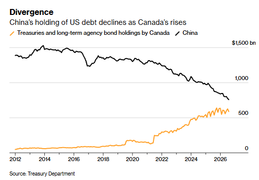
背景与关键数据
- TIC 数据怎么统计：美国财政部的 TIC（Treasury International Capital）报告按"托管地"而不是"实际持有人"统计。如果中国央行把美债放在比利时的 Euroclear 或加拿大的某家托管银行，数据里就记在比利时或加拿大名下。这是 TIC 数据众所周知的"托管偏差"。
- 数字：加拿大五年内积累了接近 6000 亿美元的美国国债和联邦住房机构债（房利美、房地美发行的债券和 MBS），持仓扩大到原来的四倍以上。中国官方持仓则从 2013 年的 1.3 万亿美元以上降到现在约 7000 亿。
- 第二种解释：加拿大对冲基金的"相对价值交易"，主要是国债基差交易——买现券、卖期货赚价差，需要持有大量现券，这些现券就记在加拿大名下。两种解释可能同时成立。
- Etra（前纽约联储）的态度很谨慎："每个人都掌握了不同的局部信息，没有人能看清完整情况。"
图片解读
- 彭博图表"分化：中国持有的美债下降，加拿大的上升"，横轴 2012–2026 年，纵轴单位十亿美元，数据来源美国财政部。
- 黑线（中国）：从 2013 年的约 1.3 万亿峰值缓慢下行，2016–2017 年有一次明显回落又反弹，2022 年后加速下降，现在约 7000 亿。
- 橙线（加拿大）：2012–2019 年几乎贴着零轴，2020 年开始抬升，2021 年中有一次跳升，之后持续攀升到现在的约 5500 亿。
- 两条线的"剪刀差"在视觉上非常醒目，但如果把加拿大的增量加回中国，中国的持仓基本没有减少。这就是彭博想表达的。
为什么重要 / 对市场和经济的含义
- 对"去美元化"叙事的修正：市场常引用"中国减持美债"来论证美元体系在瓦解、支撑金价。这帖说明事实可能是：中国的贸易顺差（年化 1.2 万亿美元）赚来的美元没地方去，还是得买美债，只是换个名字。美元的"网络效应"比想象中顽固——这正是帖 18 BIS 论文说的"美元等级结构"。
- 对中国的动机：为什么要绕？（1）政治上避免"持续资助美国"的形象；（2）防范被制裁——俄罗斯 2022 年被冻结约 3000 亿美元储备后，各国都在想办法把资产放在美国直接管辖之外的托管机构（虽然美债本身还是美国的负债）；（3）保留"减持美债"作为谈判筹码的叙事价值。
- 对美债市场：如果中国的实际需求没变，那"外国央行抛售导致收益率上升"的担忧就被高估了，美债收益率高企更多是因为通胀和财政赤字，而非买家流失。
延伸知识
- "比利时之谜"：2014–2015 年比利时的美债持仓突然从不到 2000 亿暴增到近 4000 亿，市场很快识别出是中国通过 Euroclear（总部在布鲁塞尔）托管。之后中国持仓"下降"时，比利时持仓"上升"，成了公开的秘密。加拿大是这个故事的最新版本。
- 基差交易（basis trade）：对冲基金买入美国国债现券，同时卖出对应的国债期货，赚两者之间的微小价差，用 50–100 倍杠杆放大。这类交易规模据估计超过 1 万亿美元，大量通过开曼群岛的实体进行，所以开曼也是 TIC 里美债持仓增长最快的"国家"之一。2020 年 3 月基差交易集中平仓曾引发美债市场流动性危机。
帖 13 · 17:35 · zerohedge：伊朗战争七个月——"炸弹之母"、2000 美元家庭成本、冻结资产与欧洲裂痕
四条地缘新闻拼成一幅图：美国对伊朗的战争打了七个月还没定义"胜利"、每个美国家庭已为此付出近 2000 美元、特朗普想动用欧洲冻结的俄罗斯资产换乌克兰和平、而高油价已经让保加利亚这样的北约成员公开站到美俄柴油协议一边。读全文收起
帖子原文
zerohedge： 匿名的特朗普政府官员显然又一次向媒体"泄露"了伊朗战争军事计划。穆迪认为伊朗战争自战争开始以来，美国普通家庭已损失近 2000 美元。特朗普对欧洲冻结的俄罗斯资产表示兴趣。保加利亚支持特朗普-普京柴油协议，震惊欧盟 #其他国家经济#
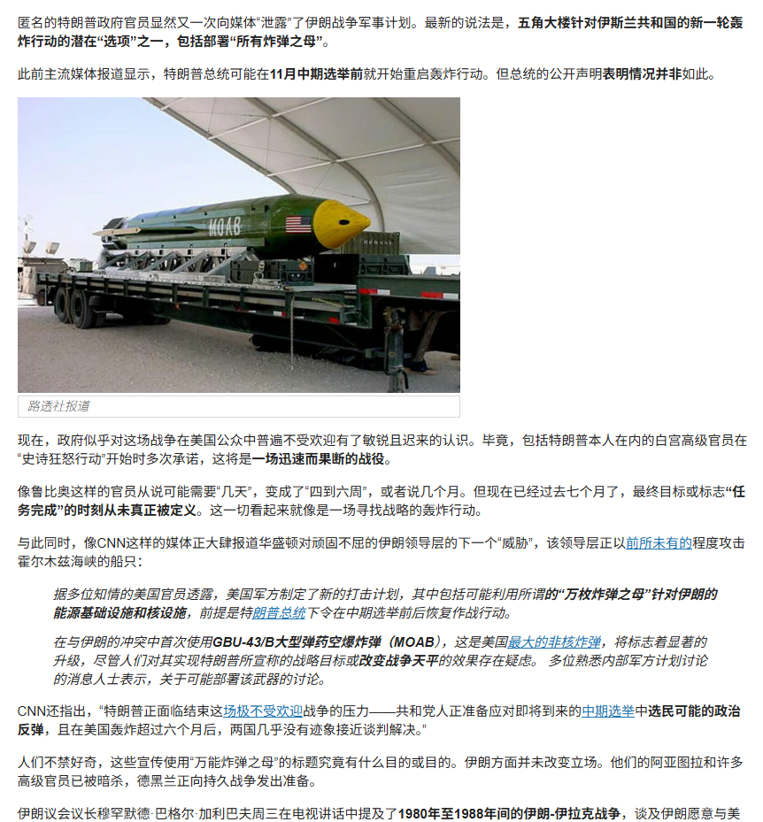
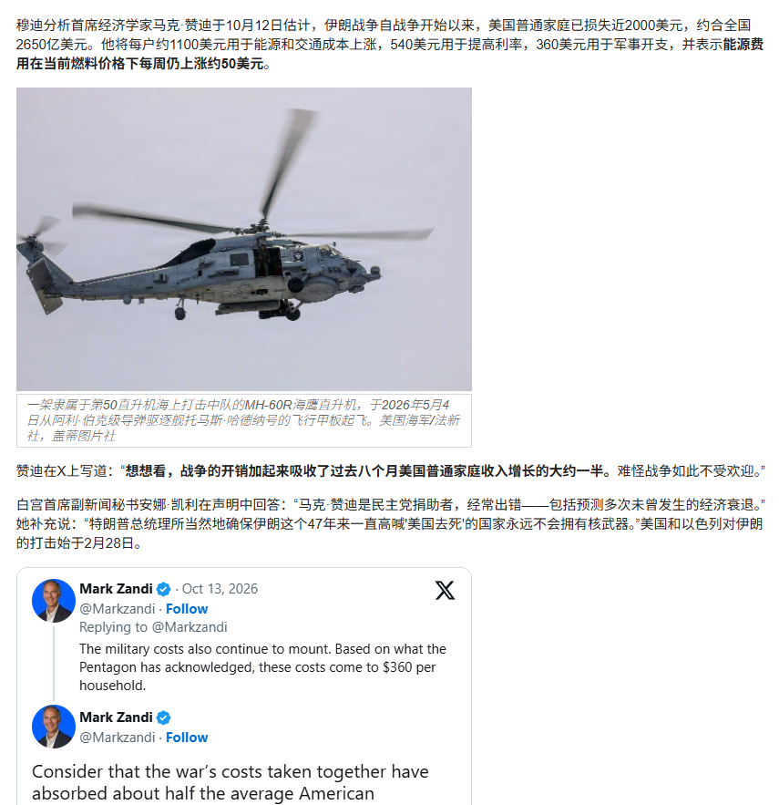
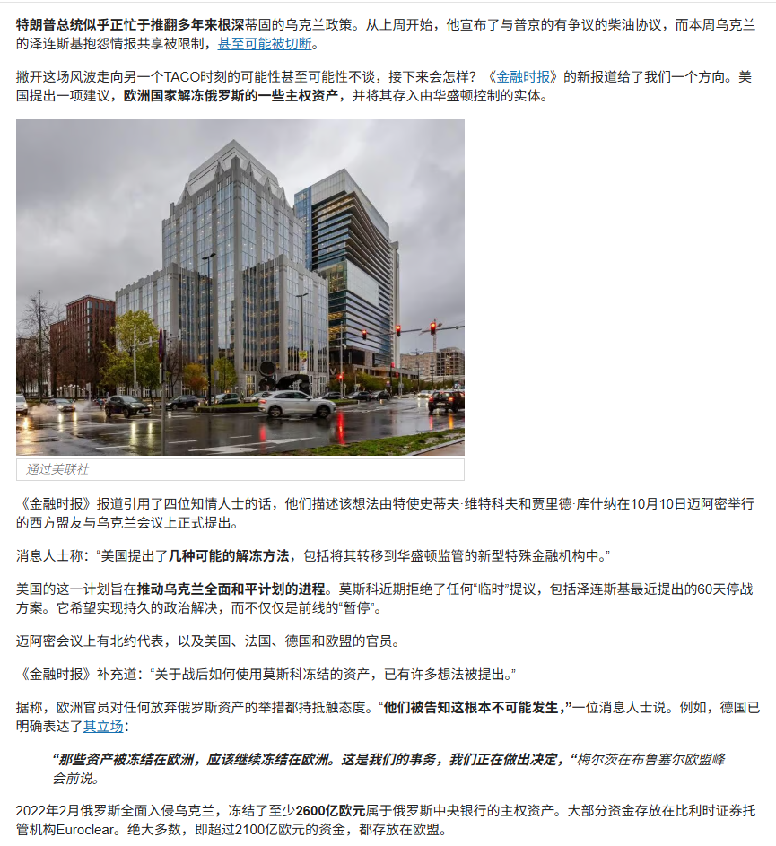
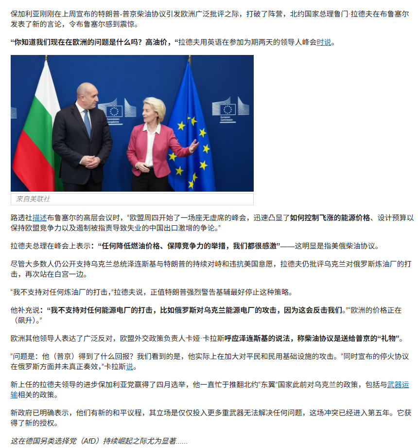
背景与关键数据
- 战争时间线：美国和以色列对伊朗的打击始于 2026 年 2 月 28 日，至今七个多月。白宫当初承诺"迅速而果断"，国务卿鲁比奥的说法从"几天"变成"四到六周"再到"几个月"，"任务完成"的标准从未被定义。
- 军事计划"泄露"：五角大楼针对伊朗的新一轮轰炸选项包括使用 GBU-43/B"炸弹之母"（MOAB，美国最大的非核炸弹，重约 10 吨），目标是能源基础设施和核设施，前提是特朗普在中期选举前下令恢复作战。伊朗方面没有软化，正以"前所未有的程度"攻击霍尔木兹海峡的船只（昨天报告提到 24 小时内两船沉没）。
- 穆迪的测算（首席经济学家 Mark Zandi，10 月 12 日）：每个美国家庭损失近 2000 美元，全国约 2650 亿美元。拆分：约 1100 美元来自能源和交通成本上涨、540 美元来自利率上升（战争推高通胀 → 美联储无法降息）、360 美元来自军费（按五角大楼已承认的开支）。能源费用在当前油价下每周仍在涨约 50 美元。Zandi 的总结："战争开销加起来吸收了过去八个月美国家庭收入增长的大约一半。"白宫的回应是攻击 Zandi 是民主党捐款人。
- 冻结的俄罗斯资产：2022 年 2 月以来欧洲冻结了至少 2600 亿欧元俄罗斯央行主权资产，其中超过 2100 亿在比利时的 Euroclear。《金融时报》报道，特朗普的特使维特科夫和库什纳 10 月 10 日在迈阿密的西方盟友与乌克兰会议上提议：欧洲解冻部分资产，存入一个由华盛顿控制的实体，作为推动全面和平计划的一部分。欧洲的反应是坚决抵制——德国总理默茨："那些资产被冻结在欧洲，应该继续冻结在欧洲。这是我们的事务。"
- 保加利亚的"叛变"：保加利亚总理拉德夫（今年 4 月当选的进步党政府）在布鲁塞尔峰会上说："你知道我们现在在欧洲的问题是什么吗？高油价。""任何降低燃油价格、保障竞争力的举措，我们都很感激"——指的是上周特朗普与普京达成的柴油协议。他还批评乌克兰打击俄罗斯炼油厂，称"我不支持对任何能源电厂的打击，因为这会反噬我们"。欧盟外交政策负责人卡拉斯则附和泽连斯基，称柴油协议是送给普京的"礼物"。
图片解读
- 图 1：zerohedge 文章的第一部分。配图是运输车上的 MOAB 炸弹（路透社）。正文讲泄露的军事计划、鲁比奥的时间表变化、CNN 关于"中期选举压力"的报道，以及伊朗议会议长加利巴夫提到 1980–1988 两伊战争、表示伊朗愿意打持久战。
- 图 2：穆迪的测算。配图是 MH-60R 海鹰直升机从阿利·伯克级驱逐舰起飞（美国海军，2026 年 5 月 4 日）。下方嵌入 Zandi 的 X 推文截图：军费按五角大楼承认的开支为每户 360 美元；"战争的总成本吸收了美国家庭平均收入增长的大约一半"。
- 图 3：冻结资产的争夺。配图是比利时 Euroclear 总部大楼（美联社）。文字引述《金融时报》：美方在迈阿密会议上提出"几种可能的解冻方法"，包括转移到华盛顿监管的新型特殊金融机构；莫斯科拒绝了泽连斯基 60 天停火方案，要"持久的政治解决"；欧洲官员被告知"这根本不可能发生"。
- 图 4：保加利亚总理拉德夫与欧盟委员会主席冯德莱恩在布鲁塞尔的合影（美联社）。文字引述路透社对峰会的描述："如何控制飞涨的能源价格、设计预算以保持竞争力、遏制被指责导致失业的中国出口激增"是三大议题；拉德夫的言论；卡拉斯的反驳；以及"这在德国另类选择党持续崛起之际尤为显著"。
为什么重要 / 对市场和经济的含义
- 油价是所有线索的交汇点：伊朗战争 → 霍尔木兹受扰 → 布伦特 100 美元以上 → 美国 CPI 3.7%、家庭多花 1100 美元 → 美联储无法降息 → 全球流动性紧（帖 7 大摩的"第二座山"、帖 11 玻利维亚的美元荒）→ 欧洲能源成本高企 → 保加利亚等国为了便宜柴油愿意和俄罗斯做交易 → 欧盟内部裂痕。
- 对美国政治：中期选举前，战争"极不受欢迎"，共和党内部开始担心。特朗普的选择是：要么升级（MOAB）速战速决，要么找台阶下。两种路径对油价的方向完全相反，这是未来一两个月最大的宏观不确定性。
- 对欧元资产：如果美国真的推动解冻俄罗斯资产并转入美国控制的实体，Euroclear 和欧元作为"安全托管地"的信誉会受损——这和帖 12 中国把美债转托管的逻辑是同一件事的两面：主权资产的"可冻结性"正在成为储备配置的核心考量。
- 对欧洲政治：保加利亚公开站队、德国 AfD 崛起、匈牙利斯洛伐克早已亲俄，欧盟在对俄、对华（帖 9）、对美三条线上同时承压，内部共识越来越难。
延伸知识
- 战争的经济成本怎么算：穆迪的方法是把直接军费（最小的一块）和间接成本（能源、利率）加总，间接成本是直接军费的四倍多。这和 2003 年伊拉克战争的事后评估一致——斯蒂格利茨估算的"三万亿美元战争"中，大部分也是间接成本（油价、退伍军人医疗、利息）。
- 主权资产冻结的先例与后果：2022 年冻结俄罗斯约 3000 亿美元储备是二战后对一个大国最大规模的金融制裁。之后全球央行黄金购买量翻倍（黄金不能被冻结），中国加速多元化储备。如果这笔资产最终被"没收"或"挪用"，对所有非西方央行而言都是"美元/欧元储备不安全"的实锤，长期利好黄金和非西方的储备多元化。
帖 14 · 17:41 · 彭博/IDC：内存涨价压垮手机——三季度出货暴跌 22%，史上最差
AI 把内存芯片抢光了，内存价格暴涨让手机、尤其是中低端手机做不出利润，厂商只能减产——全球手机市场一个季度少卖了 7200 万部，中国品牌跌了三成。读全文收起
帖子原文
bloomberg： 据市场调研机构 IDC 称，智能手机市场在 9 月季度遭遇了有记录以来最严重的下滑，内存成本上升导致出货量下降 22%，且预估未来情况更糟。小米公司和 Oppo 等中国品牌在顶级品牌中受损最为严重，而苹果和三星电子因拥有更庞大的高端手机组合表现较好。IDC 现在预计增长的复苏最早也要到 2028 年才会出现。 #经济数据#
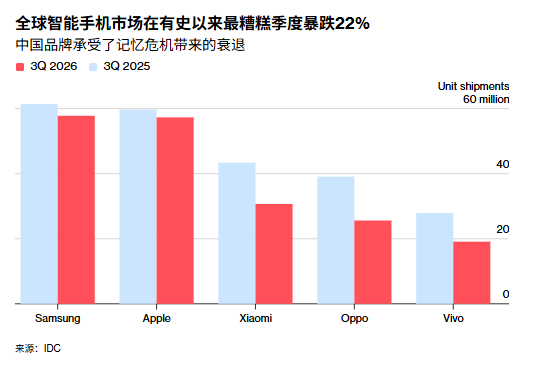
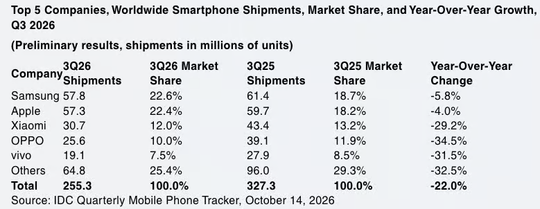
背景与关键数据
- 核心机制：HBM（高带宽内存）和服务器 DRAM 的需求爆发，三星、海力士、美光把产能优先给了 AI 客户，普通 DRAM 和 NAND 供给收缩、价格飙升。内存在一部中低端手机的物料成本（BOM）里原本占 10–15%，价格翻倍后可能占到 25–30%，而中低端手机的毛利本来就只有个位数，于是要么涨价（卖不动）要么减产（保利润）。
- IDC 数据（2026 年三季度初步值）：全球出货 2.553 亿部，去年同期 3.273 亿部，同比 -22.0%。三星 5780 万（份额 22.6%，-5.8%）；苹果 5730 万（22.4%，-4.0%）；小米 3070 万（12.0%，-29.2%）；OPPO 2560 万（10.0%，-34.5%）；vivo 1910 万（7.5%，-31.5%）；其他 6480 万（25.4%，-32.5%）。
- 分化的逻辑：苹果和三星的产品组合偏高端，内存成本占比低、定价能力强，能消化涨价；中国品牌的主力是 1000–3000 元的中低端机，直接被打穿。苹果份额 22.4% 几乎追平三星。
- IDC 预计复苏最早要到 2028 年，意味着内存紧张会持续两年以上——这和帖 5 汇丰"HBM4 动能强、四季度价格展望稳健"是同一个判断的两面。
图片解读
- 图 1：彭博柱状图"全球智能手机市场在有史以来最糟糕季度暴跌 22%——中国品牌承受了记忆危机带来的衰退"。红色是 2026 年三季度，浅蓝是 2025 年三季度，单位百万部。三星和苹果的红柱只比蓝柱矮一点（约 61→58、60→57）；小米、OPPO、vivo 的红柱明显矮了一截（约 43→31、39→26、28→19）。视觉上一眼能看出"高端稳、中低端塌"。
- 图 2：IDC 的原始数据表，列出前五大厂商 2026 年三季度和 2025 年三季度的出货量、份额和同比，数据如上。"其他"（主要是传音、荣耀、真我等更低端品牌）跌幅 -32.5%，比小米还惨。
为什么重要 / 对市场和经济的含义
- AI 的"挤出效应"第一次在消费电子上显形：过去两年大家讨论 AI 对经济的影响多是"拉动"（资本开支、电力），这是第一个清晰的"挤出"案例——AI 抢走了内存产能，手机、PC、汽车电子都得为此买单。如果内存紧张持续到 2028 年，消费电子行业会经历一轮漫长的萎缩。
- 对中国：小米、OPPO、vivo 的出货跌三成，对应的是中国手机产业链（代工、零部件、渠道）的订单塌方，也是中国社零里"通讯器材"类目的下行压力。而中国自己的内存厂（长鑫、长江存储）在这个环境里反而迎来了国产替代窗口（帖 5）。
- 对存储股：短期是利好（价格涨、利润爆），但下游需求崩塌是周期见顶的经典信号。手机是 DRAM 最大的下游之一（按位元计约三成），手机出货跌 22% 意味着来自手机的内存需求可能跌 10% 以上，这部分缺口要靠 AI 服务器填补。存储周期"需求侧崩、价格还在涨"的阶段通常不会太久。
延伸知识
- BOM 成本结构与定价能力：一部 iPhone 的 BOM 约 400–500 美元，售价 1000 美元以上，内存涨 50 美元对毛利率影响约 5 个百分点；一部 150 美元的安卓机 BOM 约 120 美元，内存涨 30 美元就把利润全吃光。这就是为什么同一个冲击下高端品牌"受损较轻"。
- 2021 年的芯片荒对照：2021 年汽车因缺芯减产约 1000 万辆，当时的瓶颈是成熟制程逻辑芯片（MCU），根源是疫情期间产能分配失衡。这次的瓶颈是内存，根源是 AI 需求的结构性挤占，持续时间可能更长，因为新建内存厂要 2–3 年。
帖 15 · 17:48 · 智联招聘：三季度养老/看护岗位同比 +43.9%，增速第一
招聘市场上增长最快的行业不是 AI，不是机器人，而是养老护工——老龄化已经从统计数字变成了实实在在的用工需求。读全文收起
帖子原文
智联招聘： 三季度数据显示，养老/看护行业以 43.9% 的职位数同比增速位居所有行业第一。随着我国人口老龄化进程加快，养老服务需求持续释放，养老护理人才需求明显上升，护工、护士等岗位招聘显著扩张。养老服务业有望进一步吸纳相关专业人才，护理、老年照护等专业毕业生也将迎来更多就业机会。 #职业#
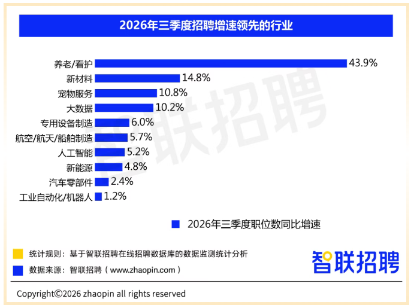
背景与关键数据
- 数据来源：智联招聘基于自身在线招聘数据库的职位数同比增速（不是就业人数、也不是薪资），反映的是企业的招聘意愿。
- 老龄化背景：中国 60 岁以上人口已超过 3.1 亿（约 22%），65 岁以上超过 2.2 亿；1962–1975 年的生育高峰人群（每年出生 2500 万以上）正在集中进入 60–65 岁，未来十年老年人口会以每年 1000 万以上的速度增加。养老护理员的官方估算缺口在几百万级别。
- 十个行业的对比（见图）：养老/看护 43.9% 一骑绝尘，第二名新材料只有 14.8%；宠物服务 10.8%、大数据 10.2%；被寄予厚望的人工智能只有 5.2%，工业自动化/机器人只有 1.2%。
- 注意：增速高部分是因为基数低（养老行业此前招聘规模小），不代表绝对岗位数最多，但方向是明确的。
图片解读
- 智联招聘的横向条形图"2026 年三季度招聘增速领先的行业"，蓝色条表示职位数同比增速。从上到下依次是：养老/看护 43.9%、新材料 14.8%、宠物服务 10.8%、大数据 10.2%、专用设备制造 6.0%、航空/航天/船舶制造 5.7%、人工智能 5.2%、新能源 4.8%、汽车零部件 2.4%、工业自动化/机器人 1.2%。
- 信号：（1）人口结构驱动的"服务型"需求（养老、宠物）增速远超"科技型"需求（AI、机器人）；（2）汽车零部件只有 2.4%，和帖 2 车市 -16% 相呼应；（3）新能源 4.8%，光伏、电池行业的扩张期已经过去。
为什么重要 / 对市场和经济的含义
- 劳动力市场的结构转换：养老护理是典型的"低薪、高强度、难以自动化"的工作，它的扩张意味着就业在向低生产率服务业迁移——这对 GDP 增速和工资增长都不是好消息，但对缓解青年失业有帮助。
- 银发经济的投资线索：养老机构、医疗器械（家用护理设备）、保险（长期护理险）、老年消费品。但要注意中国老年人的支付能力有限（养老金平均每月 3000 元左右，农村更低），"需求大"不等于"市场大"。
- 和帖 4 的对照：奶粉 -10% 和养老 +44% 放在同一天，是人口金字塔倒转最直观的体现。这两个数据会在未来二十年持续朝同一个方向走。
- 宠物服务 +10.8%：单身和丁克家庭增加带来的"情感消费"，是少子化的另一个侧面。
延伸知识
- 鲍莫尔病（Baumol's cost disease）：医疗、教育、养老这类人对人的服务，生产率很难提高（护工照顾一个老人的时间无法像制造业那样被机器压缩），但工资必须跟上其他行业，所以这些服务的成本会持续上涨，占 GDP 的比重越来越高。日本的护理行业就是典型：护理保险支出从 2000 年的 3.6 万亿日元增长到现在的 13 万亿以上。
- 长期护理保险：日本 2000 年、德国 1995 年都建立了全民长护险，由劳动人口缴费、老年人受益。中国 2016 年起在部分城市试点，但尚未全国铺开。养老护理需求能否转化为有支付能力的市场，很大程度取决于这个制度。
帖 16 · 17:54 · 付鹏：提振信心不能只打嘴炮，要掏真金白银让利给居民
付鹏借诺贝尔经济学奖的话题说了一句大白话：人们不花钱是因为对未来没信心，政府要修复信心，不能靠喊口号，得真金白银让利给居民，而且要让人相信这个让利是持久的——说到底是个分配问题。读全文收起
帖子原文
付鹏： 不能只打嘴炮儿
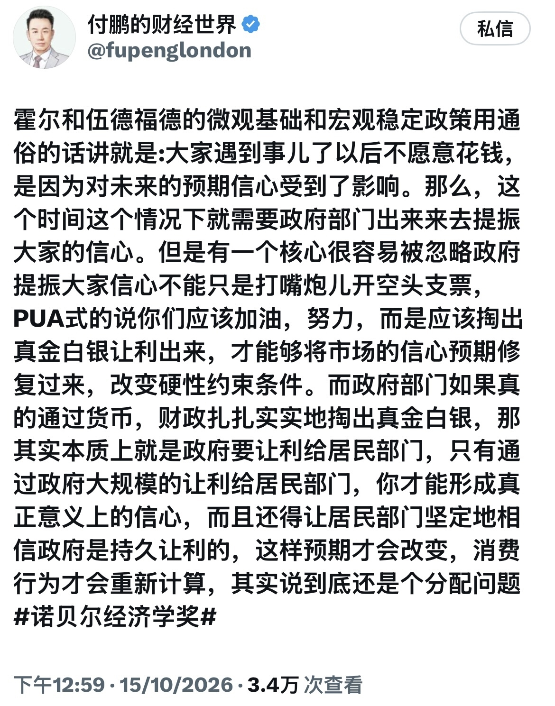
背景与关键数据
- 付鹏是谁：东北证券首席经济学家，以"看空中国内需、强调居民资产负债表"的宏观观点闻名，2024 年底一次内部演讲流传后，国内社交账号一度被限制。他的 X 账号 @fupenglondon 持续发表评论。
- 推文时间：2026 年 10 月 15 日 12:59，3.4 万次查看，带标签 #诺贝尔经济学奖#。推文里提到的霍尔（Robert Hall）和伍德福德（Michael Woodford）是宏观经济学里"微观基础"和"预期管理"方向的代表人物，推文应该是针对本周公布的诺奖得主发的评论。
- 推文的逻辑链：（1）霍尔和伍德福德的理论用大白话讲就是：遇到冲击后人们不愿花钱，是因为对未来的预期和信心受损；（2）这时需要政府出来提振信心；（3）但提振信心不能是"开空头支票、PUA 式地说你们应该加油"，而是要掏出真金白银让利，才能改变居民面临的"硬性约束条件"；（4）政府通过货币、财政掏出真金白银，本质就是政府让利给居民部门；（5）而且必须让居民相信让利是持久的，预期才会改变、消费行为才会重新计算；（6）归根结底是分配问题。
- 理论背景：霍尔 1978 年的经典论文证明，在理性预期下消费只对"永久收入"的变化做反应，临时性的收入变化基本会被存起来——这就是付鹏说"必须让居民相信让利是持久的"的理论依据。伍德福德的核心贡献是把"预期管理"放到货币政策的中心，但他同样强调承诺必须可信，否则预期不会动——"嘴炮"就是不可信的承诺。
图片解读
- 付鹏 X 账号的推文截图（账号"付鹏的财经世界"，蓝 V 认证）。全文如上述逻辑链所概括，关键句是"不能只是打嘴炮儿开空头支票，PUA 式的说你们应该加油、努力，而是应该掏出真金白银让利出来"和"其实说到底还是个分配问题"。
- 发布时间下午 12:59，2026 年 10 月 15 日，3.4 万次查看。
为什么重要 / 对市场和经济的含义
- Jason 把这帖放在今天一系列中国数据（车市、奶粉、社融、A 股情绪）和帖 1（交易所要求券商推送利好文章）之后，用意很清楚：帖 1 就是"嘴炮"的实例，而野村（帖 6）说的"不是价格问题"和瑞银（帖 8）说的"需求形成机制脱节"，指向的解药正是付鹏说的"大规模、持久地让利给居民部门"。
- 市场在等什么：过去两年每次"政策底"都是靠货币宽松和股市托底，财政直接给居民的钱很少（育儿补贴、消费券规模都在千亿级，相对 130 多万亿 GDP 是零头）。如果付鹏的逻辑成立，那么只有看到万亿级、制度化的居民转移支付（比如大幅提高养老金、全民医保、持续的现金补贴），内需和 A 股才会有真正的拐点。在此之前，低情绪可以持续很久（大摩的原话）。
- 为什么难："让利给居民"意味着政府和国企让出收入份额，涉及财政体制和分配结构的根本调整。这就是付鹏说"说到底是个分配问题"的含义——不是技术问题，是政治经济学问题。
延伸知识
- 永久收入假说：弗里德曼提出，人们的消费取决于预期的长期平均收入，而非当期收入。一次性发 1000 元，大部分会被存起来；每月固定多发 100 元且相信会持续，消费才会增加。2020 年美国三轮疫情补贴中，第一轮被大量储蓄，但叠加失业金延长后储蓄率回落、消费爆发，就是一个实验。
- 李嘉图等价的反例：理论上，政府发钱如果靠借债，居民会预期未来加税而不消费（李嘉图等价）。但现实中有流动性约束的家庭（没存款、借不到钱）会把钱花掉。付鹏强调"改变硬性约束条件"，就是在说中国大量家庭正处于这种约束下。
帖 17 · 18:01 · JPM：澳洲加息风险减弱，新西兰还会加到 3.25%
澳大利亚失业率升到了央行划定的 4.5–5.0% 区间，劳动力市场降温可以对冲油价带来的输入型通胀，所以澳洲这轮加息可能到头了；新西兰还有一两次，但经济扛得住。读全文收起
帖子原文
JPM: 澳大利亚的加息风险正在减弱，但新西兰联储仍可能继续加息至 3.25%；与此同时，新西兰经济能够承受这种货币政策正常化。澳洲联储主席 Bullock 此前表示，如果失业率进入 4.5%–5.0% 的区间，劳动力市场的降温就可能抵消进口成本上涨带来的部分通胀压力。现在，这个条件已经出现。企业不再需要通过持续提高工资来争夺员工。于是：劳动力供需降温 → 工资压力减轻 → 服务业通胀压力下降 → 央行继续加息的必要性减弱。加息周期可能接近结束。新西兰经济可能比市场想象得更有韧性，OCR 升至 3.25%；2 年期国债收益率降至 3.80%；10 年期国债收益率降至 4.70%。 #其他国家经济#
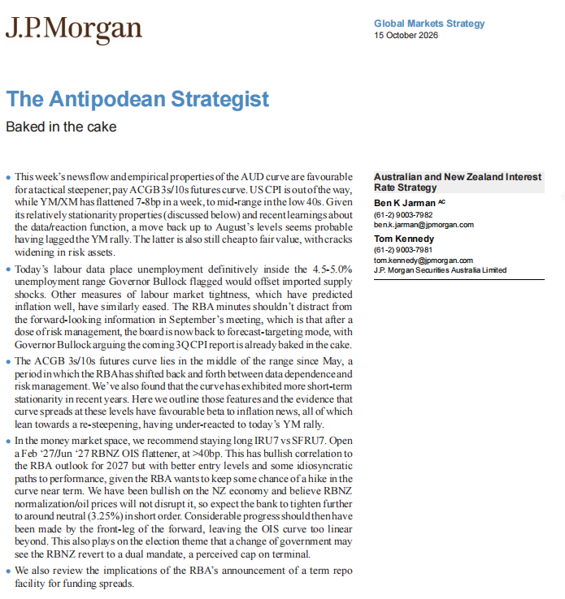
背景与关键数据
- 背景：在油价 100 美元以上、全球通胀反弹的环境里，澳洲联储（RBA）和新西兰联储（RBNZ）都在加息（这和 2025 年两家央行降息的方向相反，所以 JPM 用"正常化"来形容新西兰的加息）。
- Bullock 的条件：RBA 主席此前说过，如果失业率进入 4.5–5.0%，劳动力市场的降温足以抵消进口成本上涨带来的部分通胀。本周公布的就业数据显示失业率已经进入这个区间，而且其他劳动力紧张度指标（职位空缺、工资增速等）也在回落。
- 传导链：劳动力供需降温 → 企业不用抢人、工资压力减轻 → 服务业通胀（主要由工资驱动）回落 → 央行不需要再加息。JPM 的判断是即将公布的三季度 CPI"已经被计入了"（baked in the cake），不会改变 RBA 的路径。
- 新西兰：OCR（官方现金利率）升到 3.25% 就到"中性"水平，2 年期国债收益率会降到 3.80%、10 年期降到 4.70%——收益率下降说明市场预期加息周期到顶之后利率回落。
- 交易建议（图里）：澳洲 3 年/10 年国债曲线做陡（即押注短端收益率相对长端下降）；货币市场继续做多 IRU7（2027 年 9 月到期的澳洲银行票据期货）相对 SFRU7（同期美国 SOFR 期货），即押注澳洲短端利率相对美国下降；新西兰 2027 年 2 月/6 月 OIS 做平（>40bp），即押注新西兰的加息会在明年初之前完成。
图片解读
- JPM《The Antipodean Strategist: Baked in the cake》（南半球策略师：已成定局），2026 年 10 月 15 日，澳新利率策略。
- 五个要点：（1）本周数据有利于澳元曲线战术性做陡，美国 CPI 已过、YM/XM（3 年/10 年期货）一周内走平 7–8bp；（2）就业数据把失业率确定地放进了 Bullock 划定的 4.5–5.0% 区间，其他劳动力紧张度指标同样放松，RBA 回到"预测目标"模式；（3）3s/10s 曲线处在 5 月以来区间中位，对通胀消息有有利的 beta；（4）货币市场建议长 IRU7 vs SFRU7，开 RBNZ 2 月/6 月 OIS 做平头寸，预期新西兰加到 3.25% 中性水平，大选可能让 RBNZ 恢复双重使命（这对终端利率是一个上限）；（5）RBA 宣布的定期回购工具对融资利差的影响。
为什么重要 / 对市场和经济的含义
- 全球加息周期的"先行指标"：澳新是小型开放经济体，对大宗商品和全球贸易敏感，央行反应也快。它们的加息周期接近尾声，是判断"这轮由油价驱动的全球紧缩会持续多久"的一个参考。JPM 的逻辑（劳动力降温对冲输入型通胀）如果成立，对美联储也适用——美国失业率如果上升，美联储同样会有理由忽略油价带来的 CPI。
- 对澳元/纽元：加息预期减弱对汇率偏空，但大宗商品价格高企是支撑，所以 JPM 更多在做曲线交易而非方向交易。
- Jason 的关注点：他持续跟踪澳新（标签"其他国家经济"），因为澳大利亚是中国最大的铁矿石供应国，澳洲经济和利率是观察中国需求（帖 8）的一个外部镜像。
延伸知识
- NAIRU 与菲利普斯曲线：NAIRU 是"不加速通胀的失业率"。失业率低于 NAIRU 时工资和通胀加速，高于时减速。Bullock 的 4.5–5.0% 实际上就是 RBA 对澳洲 NAIRU 的估计。央行在"输入型通胀"（油价、汇率）和"内生通胀"（工资）之间通常只对后者做反应，因为前者是暂时的、央行控制不了。
- 曲线交易：做陡（steepener）是押注短端收益率相对长端下降（通常对应央行停止加息或开始降息），做平（flattener）则相反。这类交易不赌利率的绝对方向，只赌期限结构的形状，是利率策略师最常用的工具。
帖 18 · 18:08 · BIS 论文《货币与信任的架构》：钱的本质是终结债务，黄金是一种"货币抗议"
国际清算银行的新论文说：钱的本质不是"交换媒介"这些教科书功能，而是"能终结债务的东西"；整个金融体系是一个"谁能提供最终清偿"的等级结构，顶端是美元，而黄金是唯一不依赖任何人承诺的资产，买黄金就是在对这个体系投反对票。读全文收起
帖子原文
BIS 论文： 我们为什么相信银行账户里的 100 元，真的等于 100 元？为什么一家银行可以凭借贷款创造存款？为什么繁荣时期几乎所有债务都像钱，而危机时期大家突然只认现金？ 传统经济学通常告诉我们，货币有三种功能：交换媒介、计价单位和价值储藏。作者认为，这样的理解并没有抓住货币的本质。货币最根本的功能，是终结一项债务关系。举个例子。你欠供应商 100 万元，下个月必须支付。这 100 万元的债务，不会因为你拥有一套价值 500 万元的房产就自动消失，也不会因为你持有价值 200 万元的股票就自动消失。到了付款日，你必须找到对方认可的支付手段。如果没有足够现金，你只有三种基本选择：借新钱，推迟最终清偿；出售资产，换取支付手段；违约，让债权人承担损失。作者借用明斯基的概念，将其称为生存约束（Survival Constraint）。 对普通居民来说，银行存款是钱；但对商业银行来说，存款是债务。你在银行里有 100 万元存款，本质上是银行欠你 100 万元。银行之所以能让你相信这 100 万元与现金等值，并不是因为银行真的在金库里为每一笔存款准备了等额现金。而是因为银行受到监管、存在支付清算安排、存款保障机制以及央行流动性支持。繁荣时期，大家关心资产能带来多少收益。 危机时期，大家关心资产能不能换成钱。作者强调，信用体系的内生不稳定性不是偶然的异常，而是通过对不确定未来作出承诺来创造当前购买力所带来的结构性结果。 作者认为，国际货币体系与国内货币体系一样，存在等级结构。但二者有一个关键区别：国内货币体系通常存在中央银行这一最终流动性提供者，而全球金融体系没有真正意义上的世界中央银行。因此，全球货币体系实际上围绕美元形成了一个不对称的等级结构。全球美元流动性等级结构。全球可以创造美元债务，但只有美元体系的顶层能够提供最终美元清偿能力。 银行存款是银行的负债，国债是政府的负债，公司债是企业的负债。但是实物黄金不需要任何发行人承诺未来偿付。因此，黄金持有者购买的，某种意义上就是对货币制度的独立性。一种货币抗议（monetary protest）。 #论文或书籍推荐#
（附件：paper-175-money-and-architecture-trust.pdf）
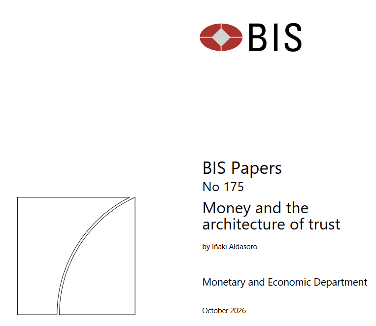
背景与关键数据
- 论文信息：BIS Papers No 175，《Money and the architecture of trust》，作者 Iñaki Aldasoro（BIS 货币与经济部），2026 年 10 月。BIS 是"央行的央行"，它的论文通常代表央行圈内的主流思考方向。
- 生存约束（Survival Constraint）：明斯基的概念。无论你多有钱（资产多少），到了债务到期日，你必须拿出债权人认可的支付手段。资产再多也不能直接还债，必须先变成"钱"。三条出路：借新还旧、卖资产、违约。
- 货币的等级结构（hierarchy of money）：从上到下是——央行货币（现金、准备金）> 银行存款 > 货币基金/回购 > 商业票据/债券。越往上越"像钱"（最终清偿能力越强），越往下越"像信用"（依赖发行人的承诺）。繁荣期大家不区分这些层级（债券、理财都当钱用），危机期所有人都往上挤（只认现金和国债），这就是"流动性危机"的本质。
- 为什么存款是钱：存款是银行欠你的债，它之所以能当钱用，靠的是监管、清算系统、存款保险和央行最后贷款人四根支柱。任何一根出问题（比如 2023 年硅谷银行），存款就不再是钱。
- 国际版本的关键区别：国内有央行当最后贷款人，全球没有"世界央行"。全世界的银行都可以创造美元存款（欧洲美元市场），但危机时只有美联储能印美元。所以全球货币体系是围绕美元的"不对称等级结构"——所有人都欠美元，但只有顶层能提供最终清偿。
- 黄金的位置：存款是银行的负债、国债是政府的负债、公司债是企业的负债——它们都是"别人的承诺"。黄金不是任何人的负债，不需要任何人承诺偿付。所以持有黄金是在购买"对货币制度的独立性"，作者称之为"货币抗议"（monetary protest）。
图片解读
- 论文封面：BIS 标志，"BIS Papers No 175, Money and the architecture of trust, by Iñaki Aldasoro, Monetary and Economic Department, October 2026"。
为什么重要 / 对市场和经济的含义
- 这篇论文是理解今天好几帖的"钥匙"：
- 帖 11 玻利维亚：央行停买黄金换美元，就是生存约束的现实——它欠的是美元债，黄金不能直接清偿，到期只能换美元。
- 帖 12 中国美债：中国的顺差美元为什么还是回流美债？因为在美元等级结构里，美国国债是仅次于美联储准备金的"最像钱"的资产，中国持有的美元最终只能停在这个体系里，换托管地改变不了这一点。
- 帖 13 冻结资产：俄罗斯 2600 亿欧元被冻结，说明"别人的负债"在政治冲突下可以被单方面作废——这正是黄金"货币抗议"价值的来源，也解释了 2022 年后央行黄金购买翻倍。
- 帖 6 中国信贷：社融 7.1% 新低，说明中国私人部门正处在"繁荣期借钱像钱、现在只认现金"的收缩阶段。
- 对黄金的含义：论文把黄金定位为"对货币体系的不信任投票"，意味着金价的长期驱动力是"对美元体系的信任度"，而不是通胀或利率。美元流动性紧张时（帖 11）金价会短期承压（大家卖金换美元），但每次制裁、冻结、财政失控都会长期抬高黄金的"抗议溢价"。
- 对美元的含义：论文实际上在说美元霸权的根基是"美联储是唯一的最终清偿提供者"，这比贸易份额、储备份额更根本。只要全球债务仍以美元计价，去美元化就只是表面文章。
延伸知识
- 明斯基时刻：明斯基的金融不稳定假说说，稳定本身会孕育不稳定——繁荣期大家越来越敢借钱（从对冲融资到投机融资到庞氏融资），直到某个时刻资产价格不再上涨，所有人同时需要卖资产还债，于是崩盘。论文说"信用体系的内生不稳定性是结构性的"，就是这个意思。2008 年次贷危机被称为"明斯基时刻"。
- 美联储互换额度（swap lines）：全球没有世界央行，但美联储在 2008 和 2020 年通过与其他主要央行的货币互换额度，事实上扮演了"全球最后贷款人"的角色——欧洲央行、日本央行从美联储借美元，再借给本国银行。谁在互换额度名单上（2020 年是 14 家央行）、谁不在（中国、大部分新兴市场），就是美元等级结构最直接的体现。
帖 19 · 18:23 · 《政治学年度评论》：非西方国家不认同西方秩序，但也没有替代方案
一篇综述论文给"多极化"泼了盆冷水：非西方国家不满西方主导的秩序是真的，但它们拿不出替代方案；而且从"一个全球霸主"变成"几个区域霸主"，对小国来说未必更自由，可能只是换了个离得更近的老大。读全文收起
帖子原文
《政治学年度评论》： 非西方国家越来越不认同西方主导的国际秩序，但这并不意味着它们已经提出了一套能够替代现有秩序的新方案。 西方主流国际关系理论常常把自由国际秩序（Liberal International Order，LIO）描述为建立在规则、多边主义、开放市场和国际合作之上的体系。但论文发现，非西方视角往往揭示了这个体系的另一面：等级性：国家在形式上享有主权平等，但实际参与制定规则、解释规则和执行规则的能力并不平等。西方中心性：许多被表述为普遍原则的规则，实际上受到西方国家历史经验、制度偏好和权力结构的深刻影响。利益分配不均：现有秩序带来的安全、经济和政治收益，并非由所有参与者平等分享。 这里有一个非常重要的区分：规则可以是普遍适用的，但制定规则的权力未必是普遍分配的。这意味着，国际秩序的争议不仅是国家之间的利益冲突，也包括谁有权决定什么才是合理、公平和合法的规则。 很多人习惯把国际秩序的演变理解为：单极化 → 多极化 → 更加民主和平等的国际秩序。 但这条逻辑并不必然成立。多极化只意味着权力分布更加分散，不意味着权力关系中的等级性消失。世界可能从一个全球性主导大国，转向多个区域性主导大国。这样一来，全球层面的权力集中度下降了，但某些地区内部的权力不对称反而可能更加突出。权力中心的数量增加，不等于普通国家的选择权增加。这也是理解多极化时需要特别警惕的问题。 #论文或书籍推荐#
（附件：annurev-polisci-032824-084913.pdf）
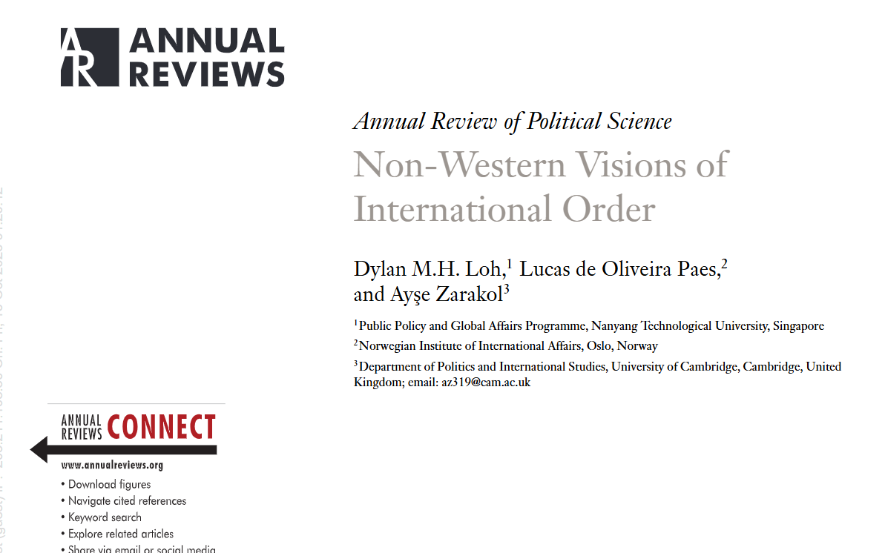
背景与关键数据
- 论文信息：《Annual Review of Political Science》（政治学年度评论，该领域最权威的综述期刊之一）刊载，《Non-Western Visions of International Order》（非西方的国际秩序观），作者 Dylan Loh（新加坡南洋理工）、Lucas de Oliveira Paes（挪威国际事务研究所）、Ayşe Zarakol（剑桥大学）。
- 自由国际秩序（LIO）：二战后由美国主导建立的体系——联合国、布雷顿森林机构（IMF、世界银行）、WTO、北约等，宣称基于规则、多边主义、开放市场。
- 非西方视角看到的"另一面"：（1）等级性——主权平等是形式，制定、解释、执行规则的能力不平等（比如 IMF 投票权、安理会否决权）；（2）西方中心性——所谓"普遍原则"实际上来自西方的历史经验；（3）利益分配不均——安全、经济、政治收益不是平等分享的。
- 核心区分："规则可以普遍适用，但制定规则的权力未必普遍分配。"争议不只是利益之争，更是"谁有权定义什么是公平"之争。
- 对多极化的警告："单极 → 多极 → 更平等"这条线不必然成立。多极化只是权力分散，不是等级消失；可能从一个全球霸主变成多个区域霸主，全球层面集中度下降，但区域内部的不对称反而更突出。"权力中心的数量增加，不等于普通国家的选择权增加。"
图片解读
- 论文首页：Annual Reviews 标志，期刊名《Annual Review of Political Science》，标题《Non-Western Visions of International Order》，三位作者及其所属机构。
为什么重要 / 对市场和经济的含义
- 这是今天报告的"理论收尾"，和帖 18 BIS 论文一起，给前面所有地缘和金融新闻提供了框架：
- 帖 9 欧盟"关闭市场"、帖 13 美国与俄罗斯越过欧洲做柴油协议、提议动用欧洲冻结的俄罗斯资产：规则（自由贸易、资产不可侵犯）是普遍的，但谁有权暂停规则、谁有权动用别人的资产，权力并不普遍分配。
- 帖 12 中国美债借道加拿大、帖 18 美元等级结构：金融秩序的等级性比政治秩序更硬——不满美元体系的国家，最终还是得把美元放回美国的负债里。
- 帖 13 保加利亚倒向美俄协议：这是"区域霸权"逻辑的样本——欧洲小国在油价压力下，选择的不是"更多自主"，而是在美、俄、欧三个权力中心之间站队。
- 对投资的含义：（1）"多极化 = 去美元化 = 利好黄金/人民币"这条流行叙事需要打折——论文说多极化不等于等级消失，BIS 说美元的最终清偿地位没有替代者；（2）区域霸权的世界意味着区域内贸易集团化、供应链"友岸化"，对跨区域出口型经济体（中国）是结构性逆风，对区域内核心国家是相对利好；（3）小国的"选择权"下降，意味着新兴市场的政策独立性和资产定价会更受大国博弈左右。
延伸知识
- 霸权稳定论与"金德尔伯格陷阱"：霸权稳定论认为，开放的国际经济秩序需要一个霸主提供公共产品（储备货币、最终消费市场、安全保障）。金德尔伯格研究 1930 年代大萧条时指出，当时英国没能力、美国没意愿提供公共产品，导致体系崩溃。今天的"陷阱"是：美国不愿再当最终消费者和安全提供者（关税、要求盟友付费），而中国没能力或没意愿接棒（内需弱、资本管制）——于是出现帖 8 瑞银问的"谁来承担最终消费"。
- "门罗主义 2.0"与区域霸权：1823 年美国宣布美洲是美国的势力范围（门罗主义）。论文说的"从全球霸主到区域霸主"，在现实中对应的是：美国对加拿大、墨西哥、委内瑞拉、格陵兰的强硬，俄罗斯对前苏联空间的主张，中国对南海和台海的立场。对小国而言，全球霸主的约束（联合国、国际法）反而比区域霸主的直接压力更"仁慈"，这是论文"特别警惕"的含义。
今日全图索引
| 帖号 | 时间（美西） | 主题 | 标签 | 图片文件名 |
|---|---|---|---|---|
| 帖 1 | 10-15 02:46 | 曹山石：上交所要求券商推送利好文章并统计触达人次 | #八卦# | post1_img1.jpg |
| 帖 2 | 10-15 14:14 | 高盛：9 月新能源零售 -16%，渗透率 67% 靠燃油车跌更快，折扣扩大 | #经济数据# | post2_img1.png |
| 帖 3 | 10-15 14:20 | 瑞银：美国企业利润/GDP 14.5% 创战后新高，利润向多行业扩散 | #其他国家经济# | post3_img1.png |
| 帖 4 | 10-15 14:40 | 高盛：婴幼儿奶粉线下 -10%，缩量市场抢份额 | #人口# | post4_img1.png |
| 帖 5 | 10-15 14:59 | 汇丰：长鑫 4F² DRAM 是长期威胁，2–3 年内不改格局，偏好三星 | #经济数据# | post5_img1.png |
| 帖 6 | 10-15 15:30 | 野村：社融 7.1%、贷款 4.8% 历史新低，但年内不再降息 | #金融# | post6_img1.png |
| 帖 7 | 10-15 15:38 | 大摩：A 股情绪指标 8%，三重约束下低情绪不等于买点 | #A股# | post7_img1.png |
| 帖 8 | 10-15 16:09 | 瑞银：出口繁荣的悖论，生产机制与需求机制脱节 | #经济数据# | post8_img1.png |
| 帖 9 | 10-15 16:33 | 彭博：欧盟酝酿极端情况下对华关闭单一市场的新权力 | #政策分析# | post9_img1.png, post9_img2.png |
| 帖 10 | 10-15 16:36 | 彭博：人民币年内升值 4% 是央行中间价管理的结果 | #金融# | post10_img1.png |
| 帖 11 | 10-15 16:41 | 彭博：玻利维亚央行停止购金、放开出口换美元流动性 | #金融# | post11_img1.png |
| 帖 12 | 10-15 16:51 | 彭博：加拿大美债持仓五年翻四倍，华尔街认为实为中国转托管 | #政策分析# | post12_img1.png |
| 帖 13 | 10-15 17:35 | zerohedge：伊朗战争"炸弹之母"计划、家庭损失 2000 美元、冻结俄资产、保加利亚倒戈 | #其他国家经济# | post13_img1.png, post13_img2.png, post13_img3.png, post13_img4.png |
| 帖 14 | 10-15 17:41 | 彭博/IDC：内存涨价致手机出货 -22% 史上最差，中国品牌跌三成 | #经济数据# | post14_img1.png, post14_img2.png |
| 帖 15 | 10-15 17:48 | 智联招聘：养老/看护岗位 +43.9% 居各行业第一 | #职业# | post15_img1.png |
| 帖 16 | 10-15 17:54 | 付鹏：提振信心不能只打嘴炮，要真金白银让利居民 | （无） | post16_img1.jpg |
| 帖 17 | 10-15 18:01 | JPM：澳洲加息风险减弱，新西兰加到 3.25% 后周期结束 | #其他国家经济# | post17_img1.png |
| 帖 18 | 10-15 18:08 | BIS 论文：货币的本质是终结债务，美元等级结构，黄金是货币抗议 | #论文或书籍推荐# | post18_img1.png |
| 帖 19 | 10-15 18:23 | 《政治学年度评论》：非西方不认同西方秩序但无替代方案，多极化≠平等 | #论文或书籍推荐# | post19_img1.png |